The assembly of the complete vehicle in one of the assembly and welding towers involved the joining of the complete LOX tank and LH 2 cylinder. The steps to accomplish the task were complex, requiring both inside and outside welding, with the stage in upright, as well as inverted, positions. The tank assembly techniques relied on many special maneuvers, including the mating of the LH 2 tank cylinder and the LOX tank. With the LOX tank in position at the bottom of the assembly tower and the LH 2 cylinder hanging overhead, workmen heated the base of the LH 2 tank cylinder, expanding it slightly. Then the heated cylinder was slipped down over the LOX tank, creating a close "interference fit." When cool, the LH 2 cylinder and LOX tank presented a minimum gap for welding and enhanced the prospects of a high-quality weld with minumum distortion. The joining of the LH 2 forward dome and tank cylinder (with the assembly inverted) required special care to ensure precise vertical alignment. Douglas relied on a special support fixture at the top of the assembly to bring the dome and cylinder together. Automatic controls using beams of light verified alignment between the top and bottom of the assembly. 28
During these final sequences, careful x-ray-tests and a penetrant dye
FROM THE S-IV TO THE S-IVB
check were performed to search for invisible structural inconsistencies, ending with verification of the structural integrity of the complete LH 2 -LOX tank assembly. Using the overhead cranes, Douglas personnel moved the completed S-IVB tankage assembly to,the hydrostatic test tower for a hydrostatic test to a proof pressure five percent over the design load limit. Like the other manufacturing and test operations, the hydrostatic test was strictly programmed and regulated. Douglas set up a very elaborate sequence to load the water, with redundant automatic controls and extensive instrumentation. The complicated sequence did not always work. During one check, the tank became overpressurized and was damaged. There were long conferences to decide on a revised system to eliminate the inadvertent overpressurization.
Curiously, the satisfactory solution came not from more sophisticated instrumentation, but by an elementary approach to the problem. "After a lengthy analysis, it was decided to use a system so old and basic that it had almost been forgotten," mused H. E. Bauer. "A standpipe—one that extended beyond the roof so that the tank could not be overpressurized, since the system would spill the excess water overboard." So a new space-age structure reared above the flat Pacific coastline at Huntington Beach in the form of an open water standpipe 43 meters high, equipped with beacons to warn passing aircraft, and rigged with a wire cage to discourage nesting birds.
Birds presented a problem in more ways than one. At Huntington Beach, workmen complained of misanthropic pigeons roosting and hovering around the rafters of the high-ceiling production buildings. The droppings not only created sanitation problems for the Saturn stages, but also for the workers. A hand-picked pigeon elimination section went to work on the problem. High-frequency whistles worked for a time, but the pigeons returned. Occasional indoor potshots at the ubiquitous birds produced humanitarian protests and holes in the roof. Workmen tried to pigeon-proof the building by sealing off all outside openings, but the persistent creatures fluttered in through gaps where the huge door machinery and track rails were installed. Ornithologists consulted on the problem finally suggested some specially treated seeds to affect temporarily the pigeons' nervous systems. It worked. After pecking at the seeds, the pigeons sat quite still for a time, then finally flew off, never to return. Cheerfully, the maintenance crews refreshed the seed supply every 60 days just to make sure their feathered foes kept their distance.
Back in one of the assembly towers, the S-IVB's related structural assemblies (forward skirt, aft skirt, interstage, and thrust structure) were mated to the tankage. The last stop was one of the checkout towers, where the J-2 engine was installed, and technicians concluded the last installations and checkout of the vehicle. Aboard a special dolly, the S-IVB rolled back to the main assembly building for painting. Finally,
STAGES TO SATURN
technicians established the stage's total empty weight, center of gravity, and moment of inertia. Then the S-IVB was ready for shipment. 29
LH 2 TANK INSULATION: DESIGN FACTORS
The odyssey of the S-IVB third stage through the Vehicle Tower Complex included one major interruption—the installation in a nearby building of the liquid hydrogen tank's internal insulation. This special installation process required a considerable amount of individual fitting by hand, and the search for the proper insulation materials absorbed many months of time and effort. The story of LH 2 insulation for the S-IV and IVB typifies many of the unexpected development problems that cropped up during the Saturn program, and illustrates the considerable amount of tedious handwork that went into sophisticated Saturn rockets.
At the start of the S-IV program in 1960, the decision to use liquid hydrogen in the upper tank presented designers with a formidable insulation problem. The LH 2 tank was designed to hold 229 000 liters (63 000 gallons) of LH 2 , filling 296 cubic meters and weighing 17 000 kilograms. Prior to the Saturn program, LH 2 had been used mainly in small quantities in laboratories. Imperative questions emerged about its qualities when used in comparatively larger volume. Efficient insulation on this massive scale had many unknowns, and engineers at Douglas consistently recalled the insulation problem as a significant aspect in the evolution of the S-IV stage. 30 One facet of the insulation story involved the composition of the insulating material, and a second related to its location—internal or external?
Some of the preliminary studies at Huntsville envisioned the use of insulation in a dual role on the upper stage of the Saturn. Because the stage would have long periods in orbit, designers considered using external insulation as a means of protection from meteorites that could pierce the walls of the liquid hydrogen tank and perhaps touch off an explosion. The combination insulation-covering-and-meteorite shield would be jettisoned before the upper stage made its second burn for the translunar injection that would carry it out of the most hazardous meteorite zone. 31 Nevertheless, to the engineers who opted for internally mounted insulation, this alternative to exterior application made very good sense. The insulation selection process also reflects several intriguing elements of the problems of designing, building, testing, and flying large rockets in space missions.
Very early in the program, internal insulation seemed more and more advantageous to many Douglas engineers, even though more was known about external types. Only one other aerospace firm in the country could claim any experience in the field of liquid hydrogen
FROM THE S-IV TO THE S-IVB
propellants, and so Douglas personnel, accompanied by some NASA representatives, made a trip to San Diego to the Convair Division of General Dynamics Corporation. The Centaur design used exterior insulation, and the people at Douglas wanted to see it. Following several conferences and exchanges of ideas with Convair, the Douglas team became more and more intrigued with the possibilities of internal, as opposed to external, mounting of insulation. Part of the reason for this decision stemmed from Convair's trials and tribulations with the external mode and concurrent reservations on the part of NASA's Lewis Research Center in Cleveland, Ohio. For these reasons—and a number of specific design factors—Douglas put the insulation on the inside. 32
In the case of the S-IV, the basic philosophy emphasized simplicity and the utilization of expertise already in hand from previous missile and space vehicle experience. Douglas engineers reasoned that, first, very little was known about the effect of large volumes of cryogenic fluids on metals and, second, even less was known about insulation materials. Pursuing the goal of simplicity, the designers separated the problem of insulation from the problem of tankage structure. This separation enabled design experimentation in the uncharted field of insulation materials to proceed in one direction without forcing changes in metal structure configuration, which proceeded in a parallel line at the same time. This method also avoided the time-consuming threat of a totally new design approach such as double-walled tanks to combine both insulation and structural factors. With insulation materials being nonstructural, the search for a desirable insulation design had a wider range of possibilities.
The mission configuration itself influenced the insulation factor. Because the mission for which the S-IV was designed did not include an extended coast phase, materials with a wide range of thermal conductivity for a brief operational period could be included in the list of potential candidates. Structural design of the S-IV stage also enhanced the potential efficiency of internal insulation. The fiberglass and honeycomb construction of the common bulkhead yielded a very high insulation factor in separation of the cold LOX and the colder LH 2 . Further internal insulation on the upper LH 2 segment of the bulkhead would help reduce the tendency to solidify the warmer LOX on the other side. 33
As engineers began to think more and more of the design factors in S-IV construction and operation, internal insulation seemed even more attractive in terms of thermal stress qualities. Thermal stress was extremely critical in the filling of the rocket's fuel tanks when LH 2 at -253°C (—423°F) came into contact with tank walls at warmer ambient air temperatures. If insulation was external, it was feared that the LH 2 would create severe thermal stress and potential damage to the tank walls as it was pumped in, because the aluminum walls possessed a very high coefficient of expansion. Even if no serious weakening was caused by the
STAGES TO SATURN
first filling, repeated operations could create problems, especially for vehicles undergoing a series of static tests and tankage checks. Internal installation of the S-IV's insulation would obviously eliminate many such problems in the tank walls. During filling, internal insulation promised dramatic advantages in reducing LH 2 loss through boil-off. When external insulation was used, nearly 100 percent of the tank's capacity had to boil off to bring the temperature of the walls down to -253°C (-423°F) to keep the LH 2 stable. Given the volume of tankage of the S-IV, external insulation meant a need for much greater quantities of expensive propellants and additional paraphernalia to provide a venting system to cope with the furious boil-off. By using internal thermal insulation, on the other hand, it was possible to expect only 25 percent boil-off of the tank's capacity, reducing the mechanical complications and all the other inherent drawbacks. Even with the highly efficent insulation finally developed for the S-IV and S-IVB, an LH 2 tank topped off at 100 percent capacity before launch needed constant replenishment, since the boil-off required compensation at rates up to 1100 liters (300 gallons) per minute.
Even with the tank finally filled, the design team foresaw additional problems with external insulation. If it became damaged and the metal underneath was exposed, that extremely cold area would tend to pull air into the damaged section. The air would liquefy and freeze, making a larger cryogenic surface, which would attract even more air, liquefaction, and icing. The whole process threatened to create an unacceptable situation of thermal losses around the damaged area, thermal instability, and a hazardous problem during ground operations.
The repeated fill-and-drain operations associated with testing and boil-off conditions raised the requirements not only for insulation materials, but also for adhesives. When Douglas began its catalog of materials and alternative modes of installation, no satisfactory adhesives could be found to bond external insulation to the outside walls of a tank filled with cryogenic fuel. On the inside, however, where the fuel made contact with insulation and not metal, the insulation created a warmer bond line where it touched the interior wall surface. In this more congenial environment, available adhesives would work. Even the plans for the test-firing operations of the S-IV program presented special problems to be solved. Because of the S-IV's volume of LH 2 fuels, a new system had to be devised to store large quantities of liquid hydrogen for repeated test firings and to transfer it to the stages set up in the test stand. 34
The process of frequently repeated testing and acceptance checks, as well as final loading prior to launch, encouraged Douglas engineers to shift toward internal insulation as a means of minimizing potential damage to the insulation from normal external handling. For example, external insulation seemed susceptible to degradation during the han-
FROM THE S-IV TO THE S-IVB
dling and transportation of the vehicle through the test and checkout phase, to say nothing of the degradation and cracking to be expected from atmospheric exposure as the rocket stage moved through these procedures and into the long transportation phase from California to the Cape for launch. Testing programs indicated that interior mounting yielded extra margins of reliability even if an accidental break in the insulation materials occurred. The cryogenic liquid coming into contact with the warmer tank wall became gaseous, and itself acted as insulation against further contact, thus reducing the thermodynamic loss. 35 After weighing the alternatives, internal insulation was confidently chosen for the S-IV stage.
LH 2 TANK INSULATION: MATERIALS
Meanwhile, the search for an effective insulation material continued. At one point, balsa wood was a leading candidate. Balsa had all the primary characteristics for good insulation: lightness, ease of shaping, and insulative capacity. But there was a question of adequate supply of the right kind of balsa. Each S-IV liquid hydrogen tank was 5.5 meters in diameter and 10 meters long. S-IVB tanks were 6.7 meters in diameter and 12.2 mete^ long. Obviously, a considerable amount of balsa would be required during production, and no one was completely sure that current stocks of balsa would suffice. A special task force analyzed the available data and reluctantly reported that the combined harvests of the balsa forests all over South America fell short. Even as the data were being analyzed, balsa was losing its allure. Lab testing revealed internal wood flaws and other deficiencies that made it less and less desirable as insulation. Still, the balsalike qualities of lightness, insulative characteristics, and ease of shaping were goals of the Douglas engineers in their quest for the perfect material, available in quantity. As Ted Smith put it, "We set out to manufacture synthetic balsa." 3
After conducting tests of a number of potential materials, Douglas technicians finally devised their own insulation. To form workable masses of insulation material, they contrived a three-dimensional matrix of fiberglass threads, woven onto a boxlike form reminiscent of a child's weaving frame—top to bottom as well as back and forth. After it was strung, the matrix frame was placed in a mold, and polyurethane foam was poured in and cured. The result was a reinforced foam block, 30 centimeters square and 20 centimeters deep, which could be sawed into a pile of flat plaques, then machined to the required convex and concave contours appropriate for the interior of the S-IV liquid hydrogen tank. The recessed waffle pattern construction of the tank's interior required special attention in shaping each tile to fit. Using a machine tool with custom fixtures and cutters, operators recessed edges and cut steps on
STAGES TO SATURN
each tile. The tiles then slipped into the appropriate indentation in the waffle pattern and still covered the notched step cut of each adjoining tile for a smooth surface. The waffle pattern included some variations in design, requiring each of the 4300 tiles to be numbered and individually shaped to its unique position inside the tank. 37 In cutting the tiles, Douglas discovered a true case of serendipity—the saw cuts left small ends of the fiberglass threads sticking out around the edges, which served admirably to engage the adhesive as each tile was installed. 38
An insulation facility provided an environmentally controlled work area during the installation process. Technicians with protective gloves and shoe covers entered the tank through an opening in the forward section, then began laying tile in the aft area near the common bulkhead, working their way back to the entry point. The numbered tiles, attached to a conveyor belt, were coated with adhesive by an automatic applicator set up in an adjoining room, then traveled via the conveyor into the tank to be affixed "by the numbers."
During this procedure, the installation facility's environmental control equipment maintained the tank's interior temperature at 13°C to 18°C (55°F to 65°F) to extend the adhesive's effective life. Once a section had been completely tiled, workers applied a special fiberglass cloth liner, then retired while a vacuum bag pressed the tile further into the waffle recesses and the tank temperature rose to 43°C (110°F) to set the adhesive. Machinery then rolled the tank around its axis to a new position, and another installation cycle began. Final steps in the operation included application of a fiberglass cloth (impregnated with resin) as a sealant over the insulation tiles, another curing period, and a concluding cure cycle at 71°C (160°F) for 24 hours. Using mounts that remained exposed above the insulation, fitters completed installation of valves, helium bottles, and other hardware before a last cleaning cycle in the degreasing tower. After the sensitive fuel-level probes were inserted, technicians sealed off the fuel tank at the top with a big, circular piece of tank skin aptly called the "dollar hatch." 39
Throughout the Saturn program, an observer could count on the recurrence of a familiar refrain—use as much existing technology as possible—as design studies for a new stage or phase of the program began. When internal insulation was first developed for the S-IV, it was designed for a flight duration of no more than 10 minutes. With the acceptance of the LOR mode for the manned Apollo mission, the S-IVB, as the third stage, had a planned flight time of up to 4.5 hours, with enough LH 2 propellant for the second burn for translunar injection. This fact presented an obvious question: could an insulation technique for a 10-minute mission serve as well for a mission lasting 4.5 hours? Would designers and engineers have to repeat the process of selection and fabrication of a new insulation material? Fortunately, engineers and technicians found that the LH 2 insulation as originally developed for the
FROM THE S-IV TO THE S-IVB
S-IV could be easily adapted to the S-IVB. The LH 2 tanks of the S-IVB were designed large enough to compensate for the anticipated boil-off losses in flight, and only minor changes were required in fabricating internal insulation for the newer third stage. 40
OPERATION: THE S-IVB PROPULSION SYSTEM
Many of the systems required for effective stage operation of the S-IVB were similar to the more conventional LOX-RP-1 operations. The introduction of liquid hydrogen necessitated some new techniques, however, and the differences in upper stages introduced additional design variations. The ubiquitous S-IVB upper stage, sharing the J-2 powerplant with the S-II stage, exemplified the nature of stage systems required for Saturn vehicle missions, particularly the Saturn V. Saturn V's S-IVB included six basic systems: propulsion, flight control, electrical power, instrumentation and telemetry, environmental control, and ordnance.
Effective operation of the J-2 engine depended on the ability of S-IVB to manage the supply of liquid oxygen and liquid hydrogen on board. The propulsion system included not only the J-2 engine but also the propellant supply system, a pneumatic control system, and a propel-lant utilization system (PU system). The LOX propellant tank could take 72 700 liters (20 000 gallons) of liquid oxygen, loaded after a preliminary purge and prechill cycle. For launch, the tank was filled in four separate phases, calculated to accommodate the interaction of cryogenic propel-lants with the tank walls and associated equipment. The slow fill sequence, at 1800 liters per minute (500 gallons per minute), raised the propellant volume to 5 percent capacity, and the fast fill sequence, at 3600 liters per minute (1000 gallons per minute), continued to 98 percent of the tank's capacity. The tank was topped off at 0 to 1100 liters per minute (0 to 300 gallons per minute) and replenished as required at 0 to 110 liters per minute (0 to 30 gallons per minute) until launch. A single fill-and-drain line could fulfill all requirements and disconnect automatically at the time of launch. The fuel tank of the S-IVB carried 229 000 liters (63 000 gallons) of liquid hydrogen. Like the LOX tank, the LH 2 tank required purge, chilldown, and fill in four stages: slow fill, fast fill, slow fill to capacity, and replenish. Its fill and drain connection also automatically disconnected at liftoff. 41
The pressurization of each propellant tank during the boost and restart phases not only enhanced propellant feed to the engine, but also helped the stage withstand bending moments and other flight loads. When Douglas designed the Thor, shortages in helium supply forced the company to use nitrogen for pressurizing the tanks. However, the appeal of helium's greater volumetric characteristics when heated, and its later
STAGES TO SATURN
availability, led to its use in Saturn upper stages. Before liftoff, both S-IVB tanks relied on helium pressurization from ground sources; thereafter, an onboard supply was used. To expand the cold helium carried in nine storage bottles, the helium was heated either by an engine heat exchanger, or by a piece of specially designed Douglas equipment, the O 2 H 2 burner, which drew oxidizer and fuel directly from the vehicle's LOX and LH 2 tanks. For additional pressurization, the liquid hydrogen tank also used gaseous hydrogen, tapped directly from the J-2 during steady-state operation. The system for tank pressurization and repres-surization employed sophisticated techniques and minimum weight. Particularly notable were the special helium storage bottles, made of titanium and charged to about 211 kilograms per square centimeter at -245°C (3000 pounds per square inch at -410°F), and the O 2 H 2 helium heater. The latter was a unique item on the S-IVB; Douglas personnel remembered that early designs produced a lot of ice and clogged up. Essentially a simple concept, the heater required a considerable effort to qualify it for the man-rated Saturn. 42
The fully loaded LOX tank was kept pressurized with gaseous helium 2.7—2.9 kilograms per square centimeter adiabatic (38—41 pounds per square inch adiabatic), maintained through launch, boost phase, and the start of stage-engine operation. The inflight helium supply came from the nine helium bottles submerged in the liquid hydrogen tank. During engine operation, a special engine heat exchanger expanded the helium before it was fed into the LOX tank, maintaining required pressures. During the orbital coast phase, pressure decayed in the LOX tank. Because there was no extraneous ground source to supply helium and because the engine heat exchanger to expand the helium was not effective until steady-state operation of the engine, an alternative repressurization source was required. This was the function served by the O 2 H 2 burner. It was located on the thrust structure and looked very much like a miniature rocket. It did, in fact, have an adjustable exhaust nozzle and generated 71 to 89 newtons (16 to 20 pounds) of thrust, expelled through the stage's center of gravity. To repressurize before the second burn, the O 2 H 2 burner operated to expand a flow of helium from the nine helium storage spheres. This repressurized the LOX tank. After ignition, the engine heat exchanger once more provided the mechanism for the flow of expanded helium gas. 43
For the LH 2 tank, initial pressurization came from an external helium source to stabilize tank pressures at 2.2 — 2.4 kilograms per square centimeter adiabatic (31-34 pounds per square inch adiabatic). When this operational level was reached, the boil-off of LH 2 inside the tank was enough to maintain pressure during liftoff and boost, until the J-2 engine started up. At this point, the fuel propellant pressurization system relied on gaseous hydrogen bled directly from the engine system. During orbital coast, the fuel tank pressure was maintained by LH 2 boil-off, with
S-IVB STAGE
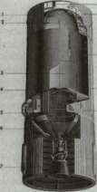
SATURN IB
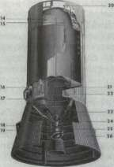
SATURN V
1. FORWARD SKIRT STRUCTURE
2. P.U. PROBE (HYDROGEN)
3. HYDROGEN TANK
4. ANTI-SLOSH BAFFLE
5. IOX TANK
6. THRUST STRUCTURE
7. J-2 ENGINE
8. ELECTRICAL MODULE PANEL
9. ANTENNA-RANGE SAFETY
10. COLD HELIUM SPHERES
11. TUNNEL
12. LOWER UMBILICAL PANEL
13. AFT INTERSTAGE
14. INSTRUMENTATION PROBE (HYDROGEN)
15. PRESSURIZATION LINE
16. APS MODULE
17. INSTRUMENTATION PROBE (LOX)
18. RETRO ROCKET
19. HYDROGEN FEED LINE
20. HYDROGEN VENT
21. P.U. PROBE (LOX)
22. ULLAGE ROCKET
23. AMBIENT HELIUM SPHERES
24. LOX FEED LINE
25. ENGINE RESTART SPHERE
26. AFT INTERSTAGE STRUCTURE
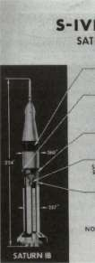
IVB DIFFERENCES
SATURN IB VS SATURN V
FORWARD SKIRT
SATURN IB 150 IBS LIGHTER - LIGHTER PAYLOAD
AUXILIARY PROPULSION AND
ULLAGE SYSTEM
SATURN IB 40 LBS LIGHTER - ATTITUDE CONTROL AND VENTING REQUIREMENT LESS ON SATURN IB THAN ON SATURN V.
-AFT SKIRT
SATURN IB 500 LBS LIGHTER - LIGHTER PAYLOAD
PROPULSION SYSTEM
SATURN IB 1500 LBS LIGHTER - LESS HELIUM STORAGE REQUIRED. ENGINE WILL NOT BE RESTARTED IN ORBIT.
INTERSTAGE
SATURN IB 1300 LBS LIGHTER - 260 INCH DIAMETER. SATURN V FLARED FROM 260" DIA. TO 396" DIA.
NOTE
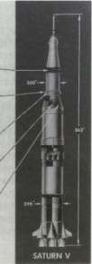
STAGES TO SATURN
a special vent-relief system to avoid overpressures. Additional excess pressure was used in a continuous "propulsive vent system," which helped keep the propellants settled toward the bottom of the tank. Like the LOX tank repressurization sequence, the fuel tank repressurization sequence for the second burn relied on the O 2 H 2 burner, which repressurized the LH 2 tank simultaneously with the LOX tank. Once the J-2 engine reached steady-state operation, LH 2 pressures reverted back to gaseous hydrogen bled from the engine. 44
The J-2 engine created one unique problem for the S-IVB stage: the "chilldown" cycle prior to engine start. As part of the propellant system, the S-IVB stage included the chilldown sequence to induce cryogenic temperatures in the LOX feed system and J-2 LOX turbopump assembly before both the first J-2 burn and the restart operation in orbit. This process enhanced reliable engine operation and avoided the unwelcome prospect of pump cavitation, which might have caused the engine to run dangerously rough. On command from the instrument unit, a LOX bypass valve opened and an electrical centrifugal pump, mounted in the LOX tank, began to circulate the oxidizer through the feed lines, the turbopump assembly, and back into the main LOX tank. This chilldown sequence began before liftoff and continued through to boost phase, right up to the time of J-2 ignition. The equipment operated again during orbital coast, anticipating the second burn of the J-2 for the translunar trajectory, and a concurrent sequence ensured proper chilldown for the LH 2 feed lines and turbopump assembly. The S-II second stage used a similar operation. 45
PROPULSION: PROPELLANT UTILIZATION SUBSYSTEM
With two kinds of propellants aboard a liquid-propelled rocket, designers wanted both tanks to run dry at the same time so as not to compromise mission performance. Residual amounts left in either of the tanks would subtract from the accuracy and stability of a desired trajectory or orbit. As a mechanism for propellant management, Saturn liquid hydrogen stages relied on the propellant utilization system. Developed for the S-IV, the PU system was used in both versions of the S-IVB, as well as the S-II second stage. Its primary function was simple: "to assure simultaneous depletion of propellants by controlling the LOX flow rate of the J-2 engine." With a PU probe located in both the LOX and LH 2 tanks during propellant loading operations, the system also provided information about the propellant mass accumulating aboard the stage.
Prior to the development of the S-IV, ballistic missiles that used kerosene and LOX propellants incorporated an "open loop" propellant utilization. PU rates were analytically determined on the basis of the powerplant, payload, and mission profile and were confirmed after many
FROM THE S-IV TO THE S-IVB
flight tests. Operational vehicles were then loaded with propellants to meet calculated goals for varying missions and targets; small errors were acceptable. This approach was simply not satisfactory for the S-IV. In the first place, high costs ruled out a long series of test flights to establish an accurate utilization curve. In the second place, the use of LH 2 presented too many variables in loading operations and during orbital coast missions. It was estimated that the stage could end up with 1360 kilograms of residual propellants in an open-loop configuration—a serious weight penalty for an Apollo-Saturn mission. So the S-IV design team decided on a "closed loop" PU system to regulate the propellants in flight and thus to ensure the positive depletion of both tanks. The PU system would continuously sense the amount of propellant in each tank and regulate the engine mixture ratio to come as close as possible to simultaneous depletion.
The decision to use a capacitance sensor followed an exhaustive examination of alternative liquid gauges. Although capacitance gauges were familiar in industrial and aircraft operations, the S-IV was the first to use it in the PU system for rocket vehicles. The cryogenic propellants posed a number of problems that led designers almost inexorably to a capacitance gauge. Sensors to indicate fluid levels could not take into account the variations in the tank geometry. Furthermore, standard sensors simply could not cope with sloshing during flight and "boiling" effects that constantly altered the liquid-level line. Designers also discarded the possibility of density sensors at the bottom of the propellant tanks, because the density of cryogenics was apt to vary from one point to another inside the same tank. The PU capacitance probe, an original Douglas design, was intended to overcome these problems through the use of a "gauging system which measured mass by integrating a fluid property related to density over the length of the tank." The PU capacitance probe could literally "read" the dielectric constant of the propellants in the tanks.
Despite its accuracy, the PU system was primarily used for loading and monitoring propellants in flight. Operational missions continued to rely on a highly refined "open loop" technique. 46
A computer program suggested a number of PU probe designs, and a series of tests confirmed the eventual configuration. From the outside, the probe looked very much like a thick pipe, with length determined by its location in the LOX or LH 2 tanks of the S-IV, S-IVB, or S-II. An outer aluminum electrode fitted over an inner stainless electrode. The LOX tank probe was installed through the bottom, and the LH 2 probe was installed through the "manhole" opening at the top. During liftoff and boost phase, the ullage movement yielded very accurate readings, which continued through engine operation. In the case of the S-IVB, observers closely watched the mass reading at engine cutoff, and calculated LH 2 boil-off rate during orbital coast. During preignition ullage for the S-IVB
STAGES TO SATURN
stage of the Saturn V, monitors got a new reading to confirm their earlier calculations, preparing for engine start and the translunar trajectory burn. 47
The PU probe reported the propellant mass as a continuous volume and height relationship in the tank. Because the probe's accuracy was directly related to the accuracy of the volume in the respective propellant tank, each tank required individual calibration for each stage. The huge tanks all exhibited variations as a result of the one-at-a-time fabrication process, and further variations in dimensions occurred with cryogenic propellants on board. Technicians, therefore, subjected the propellant tanks of each stage to a precise water calibration and converted the results to cryogenic values later.
The last element of the propulsion system consisted of the pneumatic control system. Except for pneumatic valves on the J-2 engine, the S-IVB gaseous helium pneumatic control system operated pneumatic valves, such as the LOX and LH 2 vent relief valves, fill-and-drain valves, and chilldown valves. The helium supply came from spheres mounted on the thrust structure. 48
OTHER S-IVB SYSTEMS
The flight control system gave the S-IVB stage its attitude control and thrust vector steering from correction signals originating in the instrument unit. The vehicle was steered by hydraulic actuator assemblies that gimbaled the J-2 engine. The hydraulic equipment included both electric and engine-driven pumps, as well as an auxiliary pump. The design of the hydraulic actuators owed much to the insistence of engineers at MSFC. When Douglas began design work on the S-IV actuators, the company developed a unit that was slim and long, very similar to the actuators that Douglas had perfected for landing gear in airplanes. The Huntsville design group, relying on their past experience with the Redstone and other rockets, argued that thrust levels and mission environment of the S-IV called for shorter, thicker actuators. Sure enough, the Douglas actuators developed some unacceptable instabilities. The company finally subcontracted the work to Moog Industries, who built the actuators to MSFC specifications.
The actuators played an important role in addition to thrust vector control. To prevent damage to the engine during liftoff, boost, and stage separation, the instrument unit commanded the actuators to keep the engine in the null position and repeated this function prior to the reignition sequence. For thrust vector control in the pitch and yaw directions, two actuators gimbaled the engine as required. Roll control during powered flight was provided by the auxiliary propulsion system (APS). During orbital and translunar coast periods, this system provided
FROM THE S-IV TO THE S-IVB
attitude control in all three axes (roll, pitch, and yaw). During coast, attitude was controlled by the APS. The two APS modules, mounted 180° apart on the aft skirt assembly, each contained four small engines: three for roll, pitch, and yaw; and one for ullage control. 49
Although the stage was completely programmed for automatic operation, ground observers monitored its operation from start to finish via the telemetry and instrumentation system. The stage carried one transmitter, using two antennas. During staging, some of the data were lost in transmission, and similar losses occurred during parts of the low Earth orbit. To acquire as much information as possible during each mission, the S-IVB carried a digital data acquisition system that recorded sample data pertaining to stage operation, then played it back when in range of ground stations. The telemetry and other electrical equipment was kept from overheating by the environmental control system. The system used temperature-controlled air in the aft skirt and interstage during countdown and coolant fluid in the forward skirt, circulated from equipment during countdown and flight. Before liftoff, the environmental control system also purged the aft skirt and interstage and the forward skirt with gaseous nitrogen, which cleared them of combustible gases accumulated during propellant loading and storage. Before liftoff, the S-IVB systems used external power. In flight, the stage relied on a clutch of silver-oxide-and-zinc batteries. Two 28-volt DC batteries were located in the forward skirt. The aft skirt carried one 28-volt DC battery and one 56-volt DC battery, as well as the auxiliary hydraulic pump. The S-IVB ordnance system included the mechanism for stage separation, ignition of the retrorockets mounted on the interstage, operation of the ullage engines, and range safety devices to destroy the stage in flight if necessary. 50
A RATIONALE FOR GROUND TESTS
No Saturn launch vehicle was ever lost during a flight mission. The phenomenal success of the Saturn program probably owed most to two basic philosophies: (1) the stringent reliability and quality assurance programs during manufacture, and (2) exhaustive ground testing. Emil Hellebrand, of MSFC's Science and Engineering Laboratory, stressed the significance and economy of comprehensive testing at a meeting of the NASA Science and Technology Advisory Committee in Houston in June 1964. At that time, the Saturn I had completed six flights, including two launches with the S-IV second stage and its advanced liquid hydrogen engines. Aside from a minimum of problems, the 100-percent record of success vindicated the thoroughness of the drawn-out testing program, and Hellebrand advocated similar stringent programs for the succeeding generations of Saturn vehicles. "Money spent on well planned and
STAGES TO SATURN
properly evaluated ground tests is very worthwhile and is only a tiny fraction of the money lost in flight failures," he reminded his listeners. 51
Each stage required its own testing program, tailored to the mission objectives and characteristics of the stage itself. Overall, the test phase of the Saturn program accounted for as much as 50 percent of the total effort, in terms of allotted man-hours and physical resources. This high figure reflected the intensity of the effort to reduce the risks inherent in the manned Apollo-Saturn program. In general, the respective Saturn stages progressed through three major test phases: ground test, static firing, and demonstration flight test. In the case of the S-IV and S-IVB, five different test configurations of the stage verified the manufacturing sequences as well as the overall design. A "structural test cylinder" was produced to check the ability of the tankage to take compressive forces of loading and storing cryogenic propellants. A "facilities stage" allowed other contractors and MSFC to work out interface problems, as did mating and launch facilities at Kennedy Space Center (KSC). An "all-systems stage" permitted tests of the general compatibility of vehicle equipment, pneumatic control systems, and other features. The "dynamic test stage" afforded engineers the opportunity to determine vibration characteristics during the launch and mission trajectory. The static-test-firing stage, or "battleship" stage constructed of heavy gauge stainless steel, allowed earliest possible test firing to verify major components of the propulsion systems and engines and to identify design changes required to improve performance and reliability. Because these various test items were more often than not undergoing simultaneous test and evaluation, MSFC and the contractors had to work carefully to ensure integration of design changes before committing themselves to production of the flight-stage configuration.
The earlier battleship phase allowed propulsion tests to run independently of the schedule for flight-weight structures, and gave engineers the chance to begin tests of the propulsion systems as much as 9 to 12 months earlier than anticipated. The steel sinews of the battleship articles also yielded a strength factor and safety margins that allowed installation of some components before their rigorous qualification. For the second phase of static firing, engineers introduced actual flight hardware—the "all systems" test. 52
These static tests for Douglas stages took place at the company's own Sacramento Test Operations (SACTO). The company made significant progress in automated checkout and countdown (see chapter 13), and in the handling and storage of the quantities of cryogenics required for S-IV and IVB tests. One of the ticklish problems of working with large rocket stages filled with liquid hydrogen concerned the danger of hydrogen leaks. As one authority on rocket fuel wrote, "All sorts of precautions have to be taken to make sure that oxygen doesn't get into
FROM THE S-IV TO THE S-IVB
the stuff, freeze, and produce a murderously touchy explosive." There was an added, perverse character about leaks that produced hydrogen fires—in daylight, the flame was invisible. It was possible to inadvertently blunder into the searing flame. As Harold Felix, who managed SACTO operations in the late 1960s, put it, "You don't want to go into a countdown of firing if you got leaks. It is a good way to blow up stages." But how to detect an invisible fire? Douglas used infrared TV cameras, but they still did not provide visibility at every angle. Just to make certain, SACTO had a special examination crew, outfitted with protective clothing and equipped with brooms. The men "walked down" the stage, from the top scaffolding to the bottom, extending their brooms ahead of them. If the broom suddently sprouted into flame, the men knew they had discovered a hydrogen leak. Still, accidents could happen, even when extra precaution was taken. 53
Because the SA-5 launch, scheduled in January 1964, was intended to use both the S-I and S-IV stages live, the S-IV all-systems vehicle was given extra scrutiny and analysis. In a countdown for the test firing of an S-IV all-systems vehicle at SACTO on 24 January 1964, the vehicle exploded and burned. Once before, large quantities of LOX-LH 2 propel-lants had exploded, but that had been at several thousand meters during the first Centaur launch, and the incident had not lent itself to close observation and evaluation. So the incident at SACTO was carefully scrutinized. W. R. Lucas and J. B. Gayle, both of MSFC, headed the investigating team of 11 members from Douglas and NASA. They traced the cause to an overpressurized LOX tank. At the time of the accident, tape records showed the pressure to be considerably above the design limits of the S-IV tank. Watching films taken during the test sequence, the investigators spotted a rupture in the peripheral area of the common bulkhead, and the nearly instantaneous flash of the explosion. The LH 2 tank in all probability was ruptured within milliseconds of the LOX tank break. Previously, engineers had possessed no real data on the TNT equivalent of LOX-LH 2 explosions. The examination by the Lucas and Gayle team had special significance for its acquisition of hard data, useful in future design of test sites and installations for maximum safety. 54
In spite of the test accident, NASA officials decided to go ahead with the launch of SA-5 on 29 January 1964. Because the recent S-IV test stage explosion was caused by inadvertent overpressure of the LOX tank, mission planners conjectured that the SA-5 launch could reasonably proceed, with special attention to LOX tank pressures during countdown at Cape Kennedy. The launch and subsequent Saturn I launches were successful.
As the Saturn IB and S-IVB also got under way, Douglas began fabrication of the first flight version in September 1964. In addition to changes in some of the electronics systems, the basic evolution of the
STAGES TO SATURN
S-IVB from the second stage of the Saturn IB to the third stage of the Saturn V involved interface requirements with the larger diameter of the Saturn V second stage and the controls to ensure the restart of the J-2 engine for the translunar trajectory burn. The S-IVB third stage profited heavily from S-IVB second-stage battleship tests. The tests went well— with one catastrophic exception. Just as the S-IV test program experienced the loss of a complete stage, the S-IVB test program also lost a stage. This time it was a flight stage, S-IVB-503.
With the S-IVB-503 in position at Test Stand Beta III at SACTO, the Saturn V's third stage was scheduled for acceptance testing on 20 January 1967. The terminal countdown went perfectly, but about 150 seconds into the simulated mission, and prior to stage ignition, the stage countdown was aborted because of a faulty computer tape mechanism. The Douglas crew successfully corrected the computer difficulty, recycled the test, and began again. With the terminal countdown once more unwinding, all systems reported normal. Eleven seconds before the simulated liftoff occurred, however, the stage abruptly exploded in a fiery blast of smoke and debris. Most of the stage was blown completely out and away from the test stand, with only jagged shards of metal left hanging. Adjacent service structures lost roofs and windows, and the nearby Beta II stand was so severely damaged that it was shut down. Within three days of the incident, another special investigation team convened at SACTO to analyze the probable cause.
The group finally traced the source of the explosion to one of the eight ambient-temperature helium storage spheres located on the thrust structure of the J-2 engine. The exploding sphere ruptured the propel-lant fill lines, allowing liquid oxygen and liquid hydrogen to mix and ignite, setting off an explosion that wrecked the stage. Further analysis showed that the sphere had been welded with pure titanium weld material, rather than the alloy material specified. The helium sphere and the weld seam had been previously tested to withstand extremely high overpressures, but repeated tests on the sphere prior to the acceptance firing sequence had created the weakness that ultimately resulted in disintegration of the sphere and destruction of the stage. With this information in hand, Douglas and NASA personnel agreed on revised welding specifications and quality control for the helium spheres. Replacement spheres were built in-house at Douglas from then on. 55
The loss of S-IVB-503 illustrated the ever-present probability of human error. More stringent procedures on the production line could help avert such problems, and NASA planners also hoped to achieve high reliability in launch operations through the use of fully automated checkout, countdown, and launch. With the introduction of automated checkout, at least the final moments before launch were completely insulated from human foibles. Developed in parallel with the production of the first flight stages of the S-IVB, automatic checkout was inaugu-
FROM THE S-IV TO THE S-IVB
rated with the full-duration acceptance test firing of the S-IVB flight stage for launch vehicle AS-201 (the two-stage Saturn IB). At SACTO on 8 August 1965, a Douglas news release announced the milestone: "The full-duration acceptance test firing of the first S-IVB flight stage marked the first time that a fully automatic system was used to perform the complete checkout, propellant loading and static firing of a space vehicle." The burn of the S-IVB-201 stage lasted 452 seconds, and the automatic checkout equipment not only manipulated the static firing but also performed all the intricate operations for initial checkout of the stage at Huntington Beach, as well as the postfiring checkout at SACTO. 56 The static test of S-IVB-201 was a test of men as well as machines. All the Douglas personnel were keenly anxious to have a successful demonstration of both the flight stage and the checkout equipment, and the end of the test uncapped many weeks of keyed-up emotions. A group of gleeful technicians began tossing their cohorts into the waters of a nearby pond and, in an exuberant finale, included a waitress from one of the cafeterias, along with an unsuspecting sales representative who happened to be visiting the SACTO facility. 57
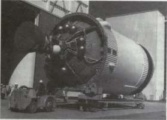
Above, a new S-IVB stage rolls out of the production facility, on its way to firing test. The white sphere is the combination helium-hydrogen start tank for the J-2 engine; the other tanks contain heliumforpressurization. Right, an S-IVB stage is hoisted into the Beta test stand in Sacramento for the acceptance firing test.
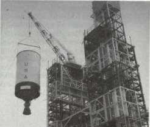
STAGES TO SATURN
The static tests were by far the most dramatic element of the Saturn V test program. They were also some of the most expensive. The cost of static firing the S-IVB alone came to $3.2 million for each stage. Keeping a close watch on the funding from his vantage point in Washington, Apollo Program Director, Major General Sam Phillips, questioned MSFC about continuing this expensive practice. In his reply, Brigadier General Edmund F. O'Connor, Marshall's Director of Industrial Operations, reminded Phillips that the incentive and performance clauses in existing contracts with stage manufacturers would be so expensive to renegotiate and rewrite that early savings simply would not accrue if the static-firing requirement was ended. Also, cryogenic calibration occurred during the static test operations, and these expensive calibration operations, using a full load of cryogenic propellants, would have to be done in any case. O'Connor pointed out that static tests and postfire checkout frequently exposed shortcomings that might have caused the loss of the mission. Even during propellant loading, problems cropped up. Elimination of static firing would mean that vehicle hardware got its first exposure to full cryogenic loads while the vehicle sat on the pad, only hours away from ignition and liftoff—not a propitious time to discover a leaky hose or faulty valve. O'Connor won his point. For the time being, static firing continued. 58
SUMMARY: CENTAUR, S-IV, AND S-IVB
In the evolution of the hydrogen-fueled S-IV and S-IVB, Douglas drafted its designs against the mission profile and general requirements established by the Marshall Space Flight Center. Douglas engineers were not always happy with the close technical monitoring from Huntsville, a strong characteristic of the Marshall team. Differences were inevitable, given the pride and confidence of personnel on both the contractor's side and the customer's side. In retrospect, Douglas personnel emphasized their role in pushing ahead in many technical areas, apart from contributions by their counterparts in MSFC's well-equipped laboratories. Douglas people also emphasized their independence from Convair in the development and production of liquid-hydrogen-fueled upper stages, though Douglas did learn from Convair's experience. Contractor research carried out under the aegis of NASA was not proprietary; under NASA cognizance, Douglas and Convair held a number of technical discussions. The resident MSFC representative at Douglas, O. S. Tyson, accompanied Douglas personnel during such exchanges, including excursions to static-firing test sites. 59
Because both the Centaur and the S-IV carried the same RL-10 engine, a strong tendency to follow Centaur's general design concepts persisted. Earl Wilson, one of the design engineers at Douglas, said that
FROM THE S-IV TO THE S-IVB
he had to fight hard to keep the Douglas S-IV from looking like another Centaur. Nevertheless, Wilson affirmed the cooperation of Convair and especially appreciated the collaboration of Pratt & Whitney technical representatives in establishing the different RL-10 format for the S-IV stage. 60
Ted Smith, another leading Douglas engineer, was less willing to acknowledge a debt to Centaur. Douglas gained no substantial design factors from Convair, he explained, primarily because the S-IV stage was a much larger and more complex rocket system. The Centaur was closer to the missile experience of its creator, Convair, and also to its immediate predecessor, the Atlas. Atlas and Centaur parallels were evident in the thin-skinned, pressurized-tank concept, as well as the basic philosophy of the design of the common bulkhead in each. At Douglas, the S-IV design absorbed the propellants, engine system, and even the common bulkhead concept, but the Centaur and S-IV structures had marked differences. The S-IV was much more akin to Douglas's earlier experience with the Thor vehicle in terms of structural design materials and fabrication of the tankage. Moreover, the Centaur was a comparatively small vehicle. The S-IV was rather large, for its time, and the tankage concept was extrapolated from the Thor development. 61 Even though the Centaur also featured a common bulkhead separating LH 2 and LOX within the same tankage structure, Hal Bauer noted the different S-IV honeycomb design. This feature relied on prior Douglas applications in aircraft wing panels and some phases of earlier missile design, although the extent of the honeycomb installation in a concave form was unique for its time, Bauer pointed out.
The size of the original S-IV was significant but largely overshadowed in light of subsequent evolution of the Saturn V stages, the S-IC and the S-II. It should be remembered that the Saturn I and Saturn IB, with the S-I and S-IB first stages respectively, relied on the somewhat makeshift design approach of clustered tanks to supply the requisite volume of propellant. The S-IV tankage was unique. Nothing that size had previously been attempted for any American rocket, and the liquid hydrogen fuel created unique design challenges. In many respects, then, the S-IV emerged as the first really definitive rocket stage of the Saturn program. It did not begin with a feasiblity study; it was not a case of joining together existing tankage components and proven engines. The S-IV evolved as a result of requirements established by a comparatively elaborate mission profile, an untried engine design and exotic propellant combination, and unusual size. Its success, so early in the program, was a notable achievement of the manned space program and a credit to NASA, MSFC, Pratt & Whitney, and Douglas Aircraft Company.
The special significance of the S-IV extended very quickly into the heart of the Apollo program. As noted earlier, the upper stage of the Saturn V played the final, truly critical role of the Saturn vehicle's job:
STAGES TO SATURN
Earth orbit of the vital payload; then, a second burn for the translunar trajectory. This was the role of the eventual Saturn V third stage, the S-IVB, whose technology sprang from the recent technological past. "Just as Thor technology led us to the S-IV," Hal Bauer wrote, "the S-IV led to the S-IVB." The technological knowledge and development experience came from the half-dozen S-IV stages of the Saturn I program. The S-IV and S-IVB possessed the same basic design fundamentals, including internal insulation, the forward and aft domes, and the common bulkhead. S-IVB manager, Roy Godfrey, also underscored the experience with the S-IV that established high NASA confidence in its successor. "Of prime importance has been the opportunity to observe and analyze the performance of the S-IV stage," Godfrey stated, "which formed the foundation upon which the S-IVB detailed design was built." ,, In comparing the S-IV to the S-IVB, there was a strong consensus among those who worked on both that the 'more advanced' S-IVB was, nevertheless, simpler. The earlier upper stage, with its cluster of six engines, created more design tangles than the single-engine S-IVB, even though the latter had to have the capability to restart in space. Some of the instrumentation for the S-IVB was more sophisticated, but aside from the engine, there were no major differences between the two. The electronics, including the circuitry and design for the propellant utilization probe, for example, passed easily from the S-IV to the S-IVB. 62
This fortunate evolutionary advantage was not the case in other Saturn V stages. The S-IC first stage and the S-II second stage shared a common diameter, but there the resemblance stopped. They were built by different contractors, used different propellant systems, and had different mission requirements and development histories.
The Lower Stages: S-IC and S-II
The lower stages for the Saturn I and Saturn IB, designed and built for Earth-orbital operations, traced their ancestry back to the Juno V. Saturn I and IB technology was characterized by the "bargain basement" approach—off-the-shelf tankage, and available engines. Saturn V, a vehicle designed for lunar voyages, required new engineering concepts. Designers for the S-IC and S-II stages tried to follow NASA's general guidelines to use proven technology in the big new boosters, avoiding problems and delays. Nonetheless, problems abounded.
In the first place, there was the problem of proportions. The S-IC and S-II both were sized to a 10-meter diameter. In the fabrication of booster tankage, new tooling of unique size and capabilities had to be built, and fabrication of the tank cylinders and domes required circumferential welds and meridian welds of unprecedented length. For manned flights, the welds also had to pass stringent inspection to "man-rate" the Saturn V vehicle. The difficulties faced by welding engineers and technicians were formidable. In terms of the nearly perfect welds required for the man-rated stages, weld passes of several dozen centimeters were considered possible (though highly difficult) within the state of the art; now, requirements for the S-IC and S-II demanded nearly perfect welds of several dozen meters. The task became a maddening cycle of "cut-and-try" operations. The long welding runs generated unmanageable distortions in large-circumference cylinders. Additional difficulties included coping with the varying thickness of pieces being joined by the welding pass; quality requirements for the integrity of welded seams and alignments of the components created still more revisions to operational manuals. Experienced welders had to be taught the new techniques through on-the-job instructional classes conducted on-site by the contractor.
STAGES TO SATURN
The problem of size confronted both major contractors for the Saturn V lower booster stages, Boeing being contracted for the S-IC, and North American* for the S-II. Although the S-II contract preceded that of the S-IC, the Boeing effort got off to a faster start largely because of the unusual role played by the Marshall Space Flight Center in the early stages of design and fabrication, and the availability of existing facilities at MSFC's Huntsville complex and at Michoud. The S-II encountered more than its share of problems, for a variety of reasons. Use of LH 2 propellants in a stage of this size was unique. There were insulation problems, materials and fabrication problems, and, in the opinion of MSFC, management problems. The difficulties were overcome, but not without casualties.
THE S-IC AND THE HUNTSVILLE CONNECTION
When the contract to build the biggest stage of the Saturn V, the S-IC first stage, was awarded to Boeing on 15 December 1961, general outlines of the first-stage booster were already fairly well delineated. The main configuration of the S-IC had already been established by MSFC, including the decision to use RP-1, as opposed to the LH 2 fuel used in the upper stages. Although LH 2 promised greater power, some quick figuring indicated that it would not work for the first stage booster. Liquid hydrogen was only one half as dense as kerosene. This density ratio indicated that, for the necessary propellant, an LH 2 tank design would require a far larger tank volume than required for RP-1. The size would create unacceptable penalties in tank weight and aerodynamic design. So, RP-1 became the fuel. In addition, because both the fuel and oxidant were relatively dense, engineers chose a separate, rather than integral, container configuration with a common bulkhead. The leading issue prior to the contract awards related to the number of engines the first stage would mount. 1
The C-5 configuration, late in 1960, was generally portrayed as a rocket with four F-l engines in the first stage. Not everyone was happy with this approach, particularly Milton Rosen at NASA, recently tagged by Brainerd Holmes as the new Director of Launch Vehicles and Propulsion in the Office of Manned Space Flight. At the direction of Holmes, Rosen organized a special committee to hammer out conclusions and configurations on launch vehicles (see chapter 3). The group moved into a block of motel rooms in Huntsville for an intensive two-week stint, including, as Rosen recalled, one marathon stretch of five days of almost
*North American Aviation merged with Rockwell Standard in 1967, becoming North American Rockwell (NAR), and later, Rockwell International. For convenience, the term North American is used in the narrative.
THE LOWER STAGES: S-IC AND S-II
around-the-clock negotiating. Among other things, the committee's report, delivered to Holmes on 20 March 1961, recommended five, not four, engines in the first stage.
Rosen apparently took the lead in pressing for the fifth engine, consistent with his obstinate push for a "big rocket." The MSFC contingent during the meetings included William Mrazek, Hans Maus, and James Bramlet. Rosen argued long and hard with Mrazek, until Mrazek bought the idea, carried the argument to his colleagues, and together they ultimately swayed von Braun. Adding the extra power plant really did not call for extensive design changes; this was Rosen's most convincing argument. Marshall engineers had drawn up the first stage to mount the original four engines at the ends of two heavy crossbeams at the base of the rocket. The innate conservatism of the von Braun design team was fortunate here, because the crossbeams were much heavier than required. Their inherent strength meant no real problems in mounting the fifth powerplant at the junction of the crossbeams, and the Saturn thus gained the added thrust to handle the increasingly heavy payloads of the later Apollo missions. "Conservative design," Rosen declared, "saved Apollo." 2
At second glance, MSFC people themselves found no good reason not to add the extra engine, especially with the payload creeping upward all the time. "I had an awfully uneasy feeling, you know," von Braun remembered; "every time we talked to the Houston people, the damn LEM [lunar excursion module] had gotten heavier again." The added F-l also relieved some of the concern about accumulating exhaust gases, with explosive potential, in the large space between the original four engines, and helped solve a base-heating problem in much the same way. The physical presence and exhaust plume of engine number five filled the void and directed gases and heat away from the base of the first stage. At a Management Council Meeting on 21 December 1961, NASA formalized the five-engine configuration for the S-IC. 3
In the past the Army Ballistic Missile Agency (ABMA) had performed its own preliminary design work—and even fabrication—on the first stage of launch vehicles. At Marshall the designers approached the S-IC somewhat differently. They enlisted Boeing's cooperation at a much earlier stage of the game, giving increased responsibility to the contractor. After signing the contract in December 1961, Boeing engineers worked "elbow-to-elbow" with MSFC in finalizing details of the big first stage. It was a mutually beneficial environment. With so many other irons in the fire, Marshall did not have the manpower to lavish on the S-IC, and Boeing got the chance to influence the outlines of the booster it would be building later. By the summer of 1962, Boeing had almost 500 engineers and technicians working on site at MSFC, and another 600 installed in a sprawling, hastily reconditioned cotton mill in downtown Huntsville known as the "HIC Building" (for Huntsville Industrial
STAGES TO SATURN
Center). Boeing's Huntsville operations concentrated on final hardware design and continuing liaison with MSFC.
Boeing also had about 450 people at Michoud, preparing for manufacturing operations. Michoud was also the management focal point for the S-IC, with the Saturn Booster Branch, under George H. Stoner, located there. From Michoud, Stoner presided over several far-flung elements. In Seattle, the company's home office, Boeing personnel carried out engineering and research support for Saturn, such as wind tunnel studies and other specialized engineering data. At Boeing's Wichita plant, the heavy tooling for Michoud was prepared, and subassemblies used in making up the tankage and other components of the booster were fabricated.
Michoud itself operated under Richard H. Nelson, with four sections for operations, quality and reliability assurance, engineering, and booster test. Engineering and manufacturing procedures were also laid out and coordinated with MSFC, covering a multitude of items, ranging from accidents, to test procedures, to the controlled use of precious metals, to "unplanned event reports." MSFC received many volumes of company reports, formal and informal, regarding the progress and problems of both the S-IC stage and the Michoud operations. Annual progress reports to the Marshall center summed up company activities. Topics included road construction; lighting in conference rooms; electrical troubles in the S-IC lifting derricks; and changes in stage design, test stands, and production. The company also reported on its special training programs for new employees in some of the esoteric arts of welding large space vehicles, radiographic inspection, and several varied courses in a number of specialized skills for production of booster rockets. 4
This unusually intertwined work between government and contractor prompted Stoner at one point to ask von Braun, somewhat plaintively, why pick on Boeing? Why not allow the company to forge ahead on its own, like Douglas and North American? MSFC stemmed from the Redstone Arsenal, and MSFC managers intended to maintain an in-house capability. As von Braun once explained, contractors might present beautifully turned out pieces of sample hardware, expounding the virtues of exotic lightweight alloys and advanced welding technology. MSFC remained skeptical. Highly finished work on small samples was one thing. What about welding very large, oversized segments together where alignment and integrity of weld were very tricky to achieve? MSFC wanted to maintain its expertise, to make sure that alloys and welds would really work before the manufacturer began production. In this respect, Matt Urlaub, MSFC's manager for the S-I stage, suggested additional reasons for staying close to Boeing. All of Marshall's stage contracts went to companies accustomed to working under Air Force jurisdiction, a situation that gave the companies considerable latitude in
THE LOWER STAGES: S-IC AND S-II
technical design, fabrication and manufacturing procedures, and day-to-day operations. These companies were also principally airframe manufacturers. Marshall felt, however, that it had great competence in R&D, building prototypes, and technical management in rocketry. Therefore, Marshall should exert considerable influence in its areas of expertise early in the game, then let the contractors handle the production aspects. Douglas (with the S-IV/IVB contract) and North American (the S-II contract) were to manufacture their respective stages on the West Coast, but Boeing was to manufacture the S-IC stage at Michoud—in Marshall's backyard, so to speak. So Boeing got an unusually close overview, and MSFC also got experience in how to handle its other contractors with Air Force experience.
Stoner later admitted that the close alliance with MSFC at the start had been extremely fruitful, working out problems before they arose, avoiding approaches that might have resulted in dead ends, and capitalizing on MSFC's engineering style and experience—especially welding technology—to avoid production difficulties and cost overruns. From his vantage point at NASA Headquarters, Milton Rosen accurately gauged the impact of MSFC on Boeing. All the expertise behind the V-2, Redstone, Jupiter, and Saturn I went into the S-IC stage, he noted. Any mistakes would have had to be Marshall's—and there were not many. "With Boeing, all the power of Marshall's engineering and experience went into that (S-IC) rocket," Rosen said. 5
TOOLS AND TANKAGE
Consistent with the MSFC insistence on in-house experience and capability, Marshall built three ground-test stages of the S-IC and the first two flight models. With the planned S-IC production facilities at Michoud still being modified, the MSFC production not only gave Boeing and Marshall people valuable early production experience, but also offered earlier delivery dates for test and flight stages. Using the tooling built at Boeing's Wichita facility and later installed at Marshall, Huntsville produced the S-IC-T, the S-IC-S, and the S-IC-F, and the first two flight models, the S-IC-1 and -2. The "T-Bird," as it was called, was built for static test firing; the "S," as a structural test model for load tests (it had no engines); and the "F," as a facilities test stage (also with no engines) to send to Cape Kennedy to aid in the checkout of the launch complex assembly buildings and launch equipment. Manufacture of these stages started in staggered sequence during 1963. In addition, MSFC planned to make the first complete fuel tank at Huntsville; this would be the first item turned out on S-IC tooling. Based on early tests of the fuel tank, engineers intended to verify the design loads anticipated for both it and the oxidizer tank. Then production could proceed on all components.
STAGES TO SATURN
As MSFC finished using the initial batch of tooling equipment, it was sent on to Michoud for Boeing's subsequent use there, so that portions of several stages were under construction at the same time. Approximately 7 to 9 months were required to fabricate and assemble the tanks, the longest lead-time items, and about 14 months for the complete assembly of an S-IC. For its first unit, Boeing built a ground test dynamics model, the S-IC-D, giving the company production team at Michoud some experience before starting on its first flyable booster. The S-IC-D was planned to carry one genuine engine and four simulated engines. After shipment to Huntsville, the plan was to join this first stage with the S-II and S-IVB for dynamic tests of the total vehicle "stack" in a test facility at MSFC. One other test unit was produced at Michoud—a full-sized dummy model of the S-IC stage, billed as the largest mockup in the world. Built of metal, wood, fiberglass, etc., the mockup was primarily used to help fix the sizes and shapes of parts, test the angles of tubes and lengths, and see where wire bundles would run.
Because Chrysler produced the last Saturn I and Saturn IB first stages at Michoud, Boeing had to share the facility, but took 60 percent of the available space for the larger S-IC stage. The girth of the first stage also dictated removal of some of the overhead trusses and air conditioning ducts to allow a 12.2-meter clearance for fabrication of the stages. This left a slim 0.6-meter margin for the S-IC's 11.6-meter-diameter assembly fixture.
In addition, the heavy tooling required for the S-IC necessitated reinforcement of some parts of the floor. Boeing made another notable addition to the Michoud facility with the addition of a high bay area for assembly of S-IC components. In the early stages of talks on S-IC production, the question of horizontal as opposed to vertical assembly of the tanks and components came up. The vertical assembly mode was selected, even though a new high-bay area was required, because horizontal assembly posed problems in maintaining accuracy of joints in the heavy, but thin-walled tanks. In vertical assembly, gravity held the huge parts together, although a 198-metric-ton crane was required to hoist the parts atop each other, and to lower the completed booster back to the horizontal for final finishing. 6
COMPONENTS: FEW BUT CUMBERSOME
Major components for the S-IC included the thrust structure, fuel tank, intertank, liquid oxygen tank, and forward skirt. 7 As with nearly every other major segment of the towering Saturn V, these items were elephantine in their proportions.
The S-IC thrust structure absorbed the punishment of five F-l engines at full throttle and redistributed the forces into uniform loading around the base of the rocket. The thrust structure also provided
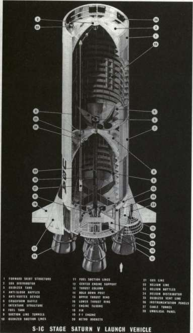
STAGES TO SATURN
support for engines and engine accessories, and miscellaneous equipment. There were also four "anchors" helping to hold the vehicle in place prior to liftoff. These aluminum forgings, some of the largest ever produced in the United States, were made in one of two presses in the country capable of 50 000 metric tons of pressure to form the basic forged billets, 4.3 meters long and 816 kilograms in weight. A tape-controlled milling machine carved out the multiple cavities, flanges, and attachment holes, leaving a finished product weighing almost one-third less. One of the distinctive features of the Saturn launch vehicle was the presence of four engine fairings and fins at the base of the S-IC and mounted on the exterior of the thrust structure. The fins added considerable stability to the vehicle, and were fabricated from titanium to withstand the 1100°C heat from the engine exhaust. The four conical engine fairings smoothed the air flow at the base of the rocket and protected the engines from aerodynamic loads. In addition, each fairing carried a pair of retrorockets to decelerate the big booster after separation from the S-II stage; the retrorockets exerted a thrust of about 400 000 newtons (90 000 pounds) during a burn time of less than a second. 8
The propellant tanks included special fill and drain points to handle heavy-duty lines used to fill the big vessels at high rates; up to 7300 liters (2000 gallons) of RP-1 per minute. If left to its own devices inside the tank, the RP-1 would have settled into strata of varying temperatures, a highly undesirable situation, so the S-IC incorporated a fuel conditioning system to "stir" over 730 000 liters (200 000 gallons) of RP-1 gently by continuously bubbling gaseous nitrogen through the feed lines and the fuel tank prior to launch. To ensure proper engine start and operation, a fuel pressurization system contributed to good pressure at the fuel turbopump inlets where 10 fuel lines (two per engine) funneled RP-1 to the engines at 4900 liters (1350 gallons) per second. During the countdown, pressurization was supplied by a ground source, but during flight, a helium pressurant was supplied from elongated bottles stored, not on the fuel tank, but submerged in the liquid oxygen (LOX) tank. In this medium, the liquid helium in the bottles was in a much more compatible environment, because the cold temperature of the liquid helium containers could have frozen the RP-1 fuel. There were additional advantages to their location in the colder LOX tank. Immersed in liquid oxygen, the cryogenic effect on the aluminum bottles allowed them to be charged to higher pressures. They were also lighter, because the cryogenic environment permitted manufacture of the helium bottles with one-half the wall thickness of a noncryogenic bottle. Produced by the Martin Company, the four helium bottles, 6 meters long and 56 centimeters in diameter, were aluminum extensions of unique length. Ducts carried the cooling helium down through heat exchangers on the F-l engines, then carried heated, expanded gaseous helium back to the top of the fuel tank for ullage pressure. 9
THE LOWER STAGES: S-IC AND S-II
With a capacity of 1 204 000 liters (331 000 gallons), the LOX tank acquired its payload in stages, with a slow fill of 5500 liters (1500 gallons) per minute and a faster fill at a torrential rate of 36 000 liters (10 000 gallons) per minute. The special problem of the LOX tank involved the feed lines leading to the thirsty engines about 15 meters below the fuel tanks. To do the job, the S-IC used five LOX suction lines, which carried oxidizer to the engines at 7300 liters (2000 gallons) per second. To achieve such high rates of flow, the lines could not be bent around the outside of the fuel tank; therefore, designers ran them right through the heart of the fuel tank. This in turn caused considerable fabrication problems, because it meant five extra holes in both the top and bottom of the fuel tank and presented the difficulty of avoiding frozen fuel around the super-cold LOX lines. The engineering fix on this included a system of tunnels, each one enclosing a LOX line, especially designed to carry an effective blanket of insulating air. Even so, the warmer fuel surrounding lines created some thermal difficulties in keeping the LOX lines properly cool. So the S-IC used some of its ground-supplied helium to bubble up through the LOX lines, and kept the liquid mixed at a sufficiently low temperature to avoid destructive boiling and geysering, or the creation of equally destructive cavities in the LOX pumps. To pressurize the tank, the S-IC tapped a helium ground source prior to launch. In flight, the LOX tank pressurization system used a system that tapped off some of the liquid oxygen, ran it through a heat exchanger to make it gaseous (called, naturally, GOX), and routed it back into the LOX tank.
Because the immense fuel and oxidizer vessels were separate items, the S-IC required additional pieces of hardware to make an integrated booster stage: the intertank and forward skirt. The intertank structure was a full seven meters in height itself, because the large bulges of the forward fuel tank dome and aft LOX dome extended inside it. There was a considerable amount of space remaining inside the intertank structure, which was given over to instrumentation cables, electrical conduit, telemetry lines, and other miscellany. Unlike the smooth skins of the propellant tanks, the unpressurized intertank structure required other means to maintain rigidity and carry the various stresses placed on it during launch. This requirement explains the distinctive appearance of both the intertank and the forward skirt, fabricated of 7075 aluminum alloy with corrugated skin and internal stringers (versus 2219 aluminum for the tanks). Both structures also included various access doors and umbilical openings for servicing, inspection, and maintenance prior to launch. The forward skirt, three meters in height, enclosed the bulge of the LOX tank's forward bulkhead, and its upper edge constituted the separation plane between the S-IC and the S-II stages.
While Rocketdyne supplied the five F-l engines, the hydraulic system, used to actuate the gimbals, was included as part of the S-IC design. The hydraulic system featured a somewhat unconventional but
STAGES TO SATURN
convenient approach, using RP-1 fuel as the actuating fluid. Although not unique, this use was not common practice in rocket engines. RP-1 fuel admittedly displayed certain drawbacks as a hydraulic fluid: it was less viscous, more corrosive, a poor lubricant, presented contamination problems, and posed a safety hazard with its relatively low flash point. Still, the use of RP-1 was appealing because it eliminated a separate hydraulic system. The RP-1 was taken directly from the high-pressure fuel duct, routed to the gimbal system, then back to the engine fuel system. To compensate for the shortcomings of RP-1 as the fluid, special care was taken in the design of valves, and a less volatile fluid (from an external source) was used when testing indoors and during prelaunch activities.
The S-IC carried a heavy load of instrumentation, particularly in the first few flights, to record and report information on its components, temperatures, pressures, and so on, totaling about 900 separate measurements. Much of the success of this complex web of instrumentation rested on the stage's transmitters and Boeing's achievement of some significant advances in the state of the art. A company team redesigned and rebuilt a 20-watt transmitter with solid-state components, rather than vacuum tubes. Relying on integrated circuits, such units were reduced to half the size of a pea, doing the same job with higher reliability than older units the size of a baseball.
The first two flight stages of the S-IC also carried visual instrumentation that yielded some unique and striking images. A pair of TV cameras covered the fiery environment of engine start and operation. The cameras were tucked away above the heat shield—safe from the heat, acoustic shock, and vibration of the open engine area—and the lenses were connected to serpentine lengths of fiber optic bundles, focused on the engine area, and were protected by special quartz windows. Fiber optic bundles also provided a field of vision into the LOX tank, with a pair of motion picture cameras using colored film to record behavior of the liquid oxygen in flight. The system offered a means to check on wave and sloshing motions in the huge tank, as well as the waterfall effects of LOX cascading off internal tank structures during the boost phase. Another pair of color motion picture cameras captured the spectacular moment of separation from the S-II stage. Twenty-five seconds after separation, the color cameras were ejected in a watertight capsule, attached to a parachute for recovery downrange in the South Atlantic. 10
FABRICATION AND MANUFACTURE
Although MSFC intended to have the S-IC developed and produced within the state of the art, the S-IC's mammoth dimensions created
THE LOWER STAGES: S-IC AND S-II
difficulties, not only in design, but in manufacturing and testing. In a speech to an annual meeting of the American Institute of Aeronautics and Astronautics in 1965, Whitney G. Smith, of Boeing's Launch Systems Branch, emphasized that "the tremendous size of this vehicle, coupled with its design complexities, have created many unique and challenging problems for the aerospace materials engineer." The basic complex challenge of the S-IC involved the scale of the stage itself in that it not only stretched the largest available tools to their maximum capacity, but also required the development of new techniques and facilities. Even old hands in the aerospace industry became fascinated by the size and scope of the S-IC stage fabrication and assembly, and magazines like Aviation Week and Space Technology featured blow-by-blow accounts of fabrication and welding procedures with technical asides on each step of the process.
The arm-in-arm approach of Boeing and MSFC in the early S-IC design studies continued into the development of jumbo-sized tooling and fabrication concepts for the stage. Under the watchful eye of Jack Trott, MSFC's deputy director of the Manufacturing Engineering Division at that time, tooling such as assembly jigs and weld fixtures were tested; once they were deemed workable, Boeing received approval to build duplicates for installation later at Michoud. This phase of tooling-up required a certain amount of flexibility in the tool manufacturing scheme, because each Apollo mission featured variations and required a slightly different S-IC for each launch. For this reason, the tooling had to have a high degree of changeability. Boeing also worked with smaller inventories (because of probable design changes), and planned built-in time allowance in the manufacturing scheme to accommodate changes to a vehicle already moving along the production line.' l
Some techniques did not work out, as in the case of chemical sculpturing of the outsized gore segments used for the curved bulkheads of the fuel and oxidizer tanks. Each bulkhead was made up to eight of the large gores, shaped like a wedge of pie, which had been made from a base segment and apex segment. The curved gores were manufactured with a precise tapering thickness toward the tip, and included a waffled pattern in the base segment. Because of the contoured shape and various raised surfaces, a chemical milling process seemed most attractive for sculpturing the curved pieces. But by 1965, trial-and-error development led Boeing to rely on machine milling of the gore segments in the flat, and then hydraulically bulge-formed to the correct contours. 12 The enormous bulge-formed dies to do this kind of job were located at Boeing-Wichita, where 90 percent of the parts for the S-IC were fabricated, then shipped to MSFC and Michoud to be manufactured into a complete booster stage.
In addition to bulge-forming gore segments from heavy aluminum sheets (up to 27.6 square meters in size), Boeing-Wichita devised a technique that simultaneously age-hardened and formed the large aluminum alloy plates in an electric furnace. The plates that made up the tank
STAGES TO SATURN
walls weighed five metric tons each, before they were milled down to weigh only one ton with walls about 60 millimeters thick. The tape-controlled form milling exposed the integral stiffeners, configured so that they were parallel to each other when the tank was in the curved condition. Mathias Siebel, director of MSFC's Manufacturing Engineering Laboratory, remarked that many test panels had to be machined to get the spacing and machine control tapes set up just right. Normally, the fabrication technique involved taking the 3.4 x 8-meter plates and rolling them to shape, heat treating in a restraining fixture, then further processing to eliminate distortions. Using its electric furnace, the Wichita plant turned out integrally stiffened fuel and LOX tank walls by clamping the piece to a precisely curved fixture that was a built-in part of the furnace. In this way, tank walls were age-hardened by heat and formed in the same process. 13
Eventually, the dozens of pieces of metal to make the S-IC tanks arrived at MSFC or Michoud to be welded together. The outsized dimensions of the pieces dictated modifications to standard welding procedures in which the welding tool was stationary and the piece to be welded was turned. Instead, the welding tools in most cases traveled along tracks over the components, held rigidly in huge jigs. The big problem was distortion, always a plague in the fabrication of light vessels (such as the Saturn tanks), and the S-IC propellant tanks were among the largest such lightweight vessels ever built. The primary cause of distortion was heat, and heat was unavoidable on the extended welding passes needed to make the vessel. Several actions were undertaken to reduce the heat and distortion factors. To ensure maximum weld conditions, the work was conducted in special areas with temperatures below 25°C and the humidity below 50 percent. Otherwise, too many weld defects occurred in the work. In addition, special techniques were employed at the welding surface, particularly the use of the tungsten-inert-gas (TIG) process. The TIG method had been used in other applications but never to such a great extent as in the fabrication of aluminum tanks for Saturn. The inert gas shield protected the weld from air, offered more control of the process, and allowed anywhere from 2 to 30 passes over a single weld joint. An S-IC had about 10 kilometers of welding with every centimeter inspected. Under these constraints, welding teams numbered between 10 and 15 specialists, with procedures lasting up to eight hours and sequenced like the countdown of a launch vehicle. 14
Major welding operations entailed the joining of base and apex segments of the bulkhead gore segments into complete domes for the fuel and LOX tanks. The domes presented some difficult welding challenges when it came to welding various fittings and the several duct lines, because high residual stress in the huge curved components occasionally created a distortion effect known as "oil-canning." The distortions produced uneven surfaces that in turn upset the close
THE LOWER STAGES: S-IC AND S-II
tolerances required for other welding operations. The LOX duct lines, for example, were welded to fittings in the curved bulkhead. Specifications allowed no more that 0.5 millimeter mismatch between the duct and the bulkhead fitting, involving a bias-cut joint 63 centimeters in diameter. Rather than return to a time-consuming process of age-forming in a special fixture, MSFC developed a special "electromagnetic hammer" to iron out the distortions. High voltage passing through a large coil created opposing fields between the distorted part and the "hammer." The opposing fields repelled, and because the mass of the coil was greater than the mass of the part, the part actually moved to eliminate the distortion. There was no physical impact between the part and the coil. In fact, demonstrators liked to lay a sheet of tissue paper between the coil and part, proceed with the "hammering," and remove the tissue undamaged.
After several materials were rejected, the aluminum used in the fuel and LOX tanks was a 2219 alloy, chosen because of its variations in size, required for the S-IC, its weldability, and its resistance to stress corrosion. The propellant tank walls were welded into king-size hoops (10-meter-diameter), two for the fuel tank cylinder and four for the LOX tank cylinder. The tank cylinders included numerous circular slosh baffles designed for structural circularity and for slosh control. Additional slosh control was created by the installation of cruciform slosh control baffles in the aft domes of the fuel and LOX tanks. 15
Before the components of the propellant tanks were welded, they were subjected to special cleaning processes, with most attention given to the LOX tank. For all its desirability as an oxidant, LOX is highly volatile under certain conditions presenting unusual problems in the handling and fabrication of parts in contact with the oxidizer. Mixed with a hydrocarbon like grease or oil, LOX becomes extremely unstable, and even a very small spark can ignite the capricious stuff. Theoretically, if a worker left a fingerprint on the inside of a LOX tank, the oil in the fingerprint could cause an explosive situation. So, all surfaces coming in contact with LOX were kept virtually spotless with a rating of "LOX clean". At Michoud, Boeing prepared a series of big vats for cleaning components such as valves, tubes, and tank wall segments.
Depending on the specifications, several different cleansing processes could be used and technicians wore special lint-free gloves. A typical operation began by spraying the part with a degreasing compound, followed by washing in a detergent solution. Rinsing required water that had been carefully de-ionized and decontaminated. The part was then de-oxydized with a solution of nitric acid and rinsed once more—but only in preparation for additional cleaning. After being heated, the part underwent the next step; an etching process that actually removed a micro-thin layer of surface material. Following a final rinse, drying was done with a blast of hot air, which was especially filtered to be oil-free. In addition to the cleaning of the segments, subassemblies like bulkheads
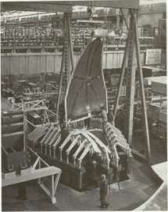
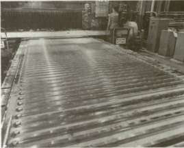
Top left, Boeing's Wichita plant is bulge forming the bulkhead of the S-1C first stage of the Saturn V. Above, 23 numerically controlled programming tapes control machining of the 3.4 x 7.9-meter aluminum alloy plates that become skin panels for the S-IC stage. Opposite, top, the skin panel is being positioned for attachment to the curved restraining fixture. Opposite, center, now curved to precise contour on the fixture, the panel is rolled into an electric furnace for age-hardening. Bottom, the finished panel emerges, ready for dipping treatment to remove impurities.
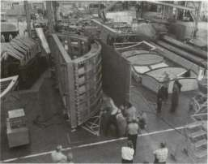
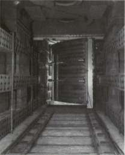
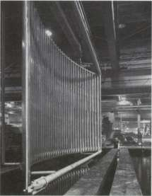
STAGES TO SATURN
also received the cleaning treatment in Boeing's "major component cleaning facility," jocularly known at Michoud as "the world's largest dishwasher." The dishwasher, a box 12 meters square and 6.7 meters high, was lined with stainless steel. A complete tank bulkhead was rolled in and washed down with special chemicals dispensed from revolving pipes outside and inside the dome. The revolving pipes and spraying action made the nickname inevitable. 16
When it came to joining the tank wall cylinders and domes together, the size of the S-IC required the production of a special rig known as the Y-ring. The longest "lead-time" item in the S-IC manufacturing process, the Y-ring required two months to complete at Michoud. It consisted of three aluminum billets welded into a ring and then carefully machined to the correct shape in several closely controlled phases. 17 The Y-ring was designed to eliminate lap joints where the tank domes, walls, and adjoining structure (like the intertank segment) came together. Each Y-ring featured one straight side as the meeting point for the vertical sides of the tank well and adjoining structure, and one appropriately angled area to serve as the meeting point for the upper or lower tank dome.
In the vertical assembly area at Michoud, complete fuel and LOX tanks were formed and then hydrostatically tested to 105 percent of the total pressure anticipated in a mission. This overpressurization created a certain amount of danger in the test area, so the test was monitored by a bank of closed circuit TV cameras. Demineralized water was used in the test sequence, with special dyes added to show up on the cameras if minute seepages occurred. The hydrostatic tests exerted so much force on the tanks that their dimensions were actually stretched by 1.3 centimeters at the bottom. After flushing and cleaning procedures, the tanks were accurately calibrated for the exact propellant capacity by refilling with water of an established weight, temperature, and specific gravity. The entire S-IC was then stacked from the bottom up, beginnng with the thrust structure, and attached together at the Y-ring juncture with special fittings. The completed S-IC was loaded on a special dolly and moved to the low-bay area for the installation of engines and miscellaneous equipment. It was moved very carefully, however, because the horizontal stage on its transporter had only a 14-centimeter roof clearance.
The hydrostatic tests were only a part of thousands of tests, large and small, conducted on the S-IC before launch. At both Michoud and MSFC, all kinds of x-ray tests, load tests, and other examinations were made to ensure the stage's fitness. Before static test firing, for example, S-IC stages spent 10 full weeks in a test cell at Michoud for scrutiny of the completed stage all around and hundreds of separate test sequences. 18 The most spectacular tests—and test facilities—for the S-IC involved the static firing of the five F-l engines at full thrust. Two S-IC static test
THE LOWER STAGES: S-IC AND S-II
stands were available, one at Huntsville and the other at the Mississippi Test Facility; both were similar in size and construction. The MTF facility was designed to include two test positions. Although MSFC conducted the first static tests of the S-IC in the summer of 1965, the MTF stand for the S-IC began operations about a year later and became the focus of the static test firing program. It seemed quite appropriate that the howling, thunderous roar of the S-IC cluster could so often be heard at an area originally known as Devil's Swamp.
At the time it was declared operational in 1966, the 124-meter-high test stand at MTF was the tallest building in the state of Mississippi. The concrete and steel tower rested on 1600 steel pilings, each 30 meters long, and the S-IC was secured by four huge hold-down arms anchored to a slab of concrete 12 meters thick. The massive jaws of the restraining arms clamped onto the rocket tail by means of drive mechanisms geared to move only 8 centimeters per minute. From a distance, the big test tower looked like a concrete monolith; its hollow legs were the equivalent of a 20-story building with offices, machine shops, data centers, and elevators. With the huge volume of LOX and kerosene in the rocket tanks, a catastrophic fire during testing was always a consideration; as a result all personnel were evacuated to remote bunkers before ignition. In case of a fire during a test, a water deluge system, evidenced by the myriad of pipes lacing up and down the structure, could spray 782 000 liters (215 000 gallons) per minute over the stand. Moreover, engine tests required a second water deluge system that supplied the stand with 1 100 000 liters (300 000 gallons) of water per minute through a double-walled steel flame bucket directly below the F-l cluster. Thousands of holes in the outer walls of the flame bucket allowed water to gush out to cool the bucket and keep it intact for the next test. During a five-minute test run, the S-IC test stand got enough water to supply a city of 10 000 for a day. 19
Any problems in the S-IC program seem to have occurred mostly at the start but were resolved before a serious impasse developed. Matt Urlaub recalled early confrontations between various Boeing and Marshall people over management issues. "Boeing . . . had a very strong sense of accomplishment up to that point, and they knew they had built large airplanes before, and this [S-IC] vehicle isn't much different. . . and we were, in those days, a pretty proud organization too." Both sides eventually adjusted, however, "getting the pecking order straight," as Urlaub put it. In 1963 the S-IC program encountered a succession of welding problems that persisted throughout the next year. Portions of the S-IC-T vehicle were scrapped because of welding deficiencies in the propellant tanks, and the S-IC-T generally lagged six weeks behind schedule during 1964. An upper LOX tank bulkhead for S-IC-S was scrapped "due to poor quality" in October, a.nd at the same time, the manufacturing schedule for S-IC-T was reported to be 19 weeks behind

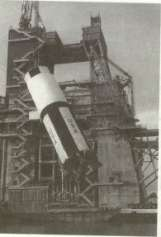
At Michoud, the big S-IC stage of the Saturn V is assembled, or "stacked," in the high bay. Top left, the fuel tank is lowered into the lower skirt; at top center, the intertank assembly is fitted to the fuel tank; at top right, the oxidizer tank is added; above, left, the forward skirt assembly is attached. Then the five F-l engines are attached (above, right) and the completed stage is shipped to the Mississippi Test Facility and hoisted into the test stand (left) for static-firing tests before shipment to the Kennedy Space Center where the total flight vehicle will be stacked, checked out, and launched.
THE LOWER STAGES: S-IC AND S-II
schedule because of a shortage in parts for the thrust structure. By November, Urlaub cautioned that the S-IC program was still behind schedule in several areas. The S-IC-1 flight stage, for instance, was lagging by three months. "Although the S-IC program may appear to be in the shadow of the S-II program," Urlaub said, "I think it would be unwise to pretend that now the entire Saturn program is paced by the
,,2O
upper stages.
When the S-IC finally began its static firing tests in 1965, the chances for success of the Apollo-Saturn program brightened considerably. Early in 1966, the S-IVB stage was operational aboard the Saturn IB vehicle. The gloomiest clouds on the horizon in 1965-1966 were hovering over the North American plant on the West Coast, where the S-II second stage was still under development.
THE S-II: CONCEPTS
The vague outlines of the S-II took shape within the report of the Silverstein committee in December 1959, when its members recommended the development of the high-thrust, liquid-hydrogen-fueled engine. In less than a year, Rocketdyne won the contract for the J-2 engine. Because many of the engine design parameters depended on stage configuration and mission profiles, designers had also begun parallel design studies on the stage itself. These studies sprang from the Silverstein committee's original report, which included a LOX-LH 2 propellant S-II stage (see chapter 2). Within weeks of the Silverstein committee's report, design and engine studies were in progress, and correlated, so that many features of the S-II design were under consideration more than 12 months before NASA began action for stage procurement. 21
On the eve of his departure as Administrator, T. Keith Glennan wanted to make sure that an S-II stage received his successor's strongest attention. The only question was when to move. Glennan hedged a bit in January 1961, when Major General Don R. Ostrander, Director of the Office of Launch Vehicle Programs, pushed for definition of the C-2 vehicle configuration, including initiation of contract work for the S-II. Glennan hesitated because he did not want to "bind the new Administrator to an expenditure which will run several hundred millions of dollars," and because he felt it wiser to see how the J-2 engine program progressed. There was no doubt in his mind, however, concerning the desirability of the S-II stage as part of the C-2. The C-l vehicle did not have the capabilities NASA needed for the long term. "The Saturn program is left in mid-stream," Glennan emphasized in the transition memo he left for his successor, "if the S-II stage is not developed and phased in as the second stage of the C-2 launch vehicle." 2
Glennan's memo reflected the strong trend within NASA to move
STAGES TO SATURN
toward a bigger vehicle with an LH 2 stage, and not long after Webb's confirmation as the new Administrator in 1961, NASA authorized the Marshall center to proceed with contractor selection. MSFC's invitations to a preproposal conference in Huntsville in April attracted 30 aerospace firms. As described by MSFC at that time, the S-II second stage of the Saturn C-2 vehicle was presented as the largest rocket project, in terms of physical size, to be undertaken by American industry. Powered by four of the new J-2 engines, the preliminary configuration of the second stage was given dimensions of 22.5 meters in length and 6.5 meters in diameter. The implied challenge must have been sobering, since 23 of the companies did not submit proposals the following month for the first phase of the S-II contractor selection process. The seven firms left in the running included Aerojet General Corporation; Chrysler Corporation, Missile Division; Convair Astronautics Division of General Dynamics Corporation; Douglas Aircraft Corporation; Lockheed Aircraft Corporation, Georgia Division; Martin Company; and North American Aviation, Incorporated. They submitted briefs to MSFC concerning their experience and capability as potential contractors for the S-II stage. 23
By June the contractors had been rated by a source evaluation board using a numerical scoring system geared to the phase one proposals. Three firms were eliminated, leaving Aerojet, Convair, Douglas, and North American. These four companies were about to receive a surprise, because NASA had decided to change the configuration of the second stage. On 8 June, Webb circulated a memo to his top advisors specifying that the Saturn C-2 simply could not boost the Apollo spacecraft to the escape velocity required for a circumlunar mission. NASA was now considering the C-3, which consisted of a fatter first stage powered by two F-l engines and a larger S-II stage. As Webb noted, the C-3 had not yet been approved, 24 and the four contractors, gathering late in June for the phase two conference, discovered they would have to grapple with some very loose ends.
The phase two conference opened with remarks by Oswald Lange, Chief of the Saturn Systems Office. In his initial statement, Lange explained why the C-2 configuration was going to be bypassed in favor of the C-3. Recent research on the problem of radiation in space indicated that the spacecraft needed more shielding, which would increase spacecraft weight from the original 6800-kilogram estimate to 13 600 kilograms. Moreover, Lange revealed, the original S-II diameter of 6.6 meters was now enlarged to 8.13 meters to be more compatible with the C-3's first stage and allow better payload flexibility in the future. On the other hand, Lange said, he was not able as yet to give the contractors hard figures on the exact configuration of the stages above the 8.13-meter S-II (making it difficult to figure out the mechanics of boost, separation of upper stages, and other aspects, as one contractor noted); indeed, MSFC might decide on an even larger 9.14-meter stage! "It may be a little hard
THE LOWER STAGES: S-IC AND S-II
for you to speculate a design if we give you such soft indications of the configuration that we ultimately want," Lange admitted, but pledged to have firm numbers when Marshall and the winning contractor sat down to hammer out the details in final contract negotiations.
In a question-and-answer session that followed, a Marshall spokesman, after elaborating on some of the aspects of the proposals, apologetically echoed Lange, and explained that Marshall was anxious to get started on the contracts. "You can see that we have a whole lot of doubt in what we say here, and there are a lot of conflicting problems," the spokesman admitted. "We are presently trying to resolve them. We could have asked you not to come here today and could have taken, say, six weeks time to resolve these problems internally, in which case we would have lost six weeks on the S-II contract." Speaking with candor, he told the contractors, "This of course puts the monkey on your back, and we know that!" However, even with all of this looseness in the preliminary stages of finalizing the contract, Marshall made it clear that firm figures for the stage would be forthcoming, and that contractors would be held strictly accountable. As Wilbur Davis, of the MSFC Procurement and Contracts Office, stated it, "I wish to emphasize at this point that the important product that NASA will buy in this procurement is the efficient management of a stage system." 25 Ironically, it was this very point that later contributed so much stress in relations between NASA and its chosen contractor.
North American won the prize; NASA announced the company's selection for the S-II contract on 11 September 1961. 26 After consultation and search for a manufacturing site, a location at Seal Beach, California (not far from Long Beach), was chosen, and the facilities for constructing the S-II were built by the government. Coordination between North American, NASA, and the Navy, designated as the government's construction agency, did not always proceed well, and led to the dispatch of NASA investigation teams from Headquarters. In spite of the problems in the three-way arrangement, D. Brainerd Holmes emphasized in the spring of 1963 that "we are getting these facilities on time and the construction is excellent." By early autumn, North American was putting together the first S-II hardware components. 27
S-II CONFIGURATION
The S-II turned out to be a comparatively advanced stage in terms of the existing state of the art. Although the S-II carried about 426 400 kilograms of liquid oxygen and liquid hydrogen, the tank structure, though supporting the structural mass, accounted for just a shade over three percent of the stage's total fueled weight. A common bulkhead much larger than that in any previous rocket averted the need for an
STAGES TO SATURN
interstage between the oxidizer and fuel tanks; this reduced the total length of the stage by over 3 meters and saved about 4 metric tons of extra weight. In technical terms, the fabrication of the bulkheads called for unusually demanding accuracy in meridian welds that joined the bulkhead gores together. The welding operation joining the curved, 6-meter-long seams together had to be made to specifications allowing less than 0.33 millimeter of a mismatch. Then there was the problem of insulating the big liquid hydrogen tank, filled with thousands of liters of the super-cold propellant. Otherwise, the basic design elements of the S-II seemed conventional enough in that it consisted of eight major structural components and six major systems, all of which reflected the usual kind of basic elements associated with both the S-IC and the S-IVB. 28
The vehicle was assembled at Seal Beach, where most of the major structural elements were fabricated. Exceptions were the interstage, aft skirt, thrust structure, and forward skirt which were produced at North American's plant in Tulsa, Oklahoma. The interstage, aft skirt, and forward skirt, all of semimonocoque construction, had been designed for structural rigidity. The thrust structure (in the usual inverted cone shape) featured both high-strength riveting and thrust longerons to handle the full thrust of the J-2 engine cluster. Fabricated in separate pieces, the aft skirt and thrust structure were intended to serve as a single structural entity when joined together. The combination served as a mounting point for the five engines, the heat shield, and assorted plumbing and black boxes.
In a sequence known as dual-plane separation, the interstage, although joined to the aft skirt, uncoupled from the S-II after staging from the S-IC. Following burnout of the first stage, a linear-shaped charge separated the S-II from the S-IC; this procedure was simultaneous with the firing of S-IC retrorockets and eight ullage motors on the interstage of the S-II. About 30 seconds after first-stage separation, the S-II interstage separated from the second stage itself. Initiation of the dual-plane separation maneuver occurred when the outboard J-2 engines reached 90 percent of their maximum thrust; at this point, explosive charges were triggered, which severed the interstage. The maneuver required a precise separation that would propel the interstage (5.4 meters long) rearward, clearing the engines by approximately 1 meter, while the S-II was accelerating to its blinding top speed. Once free of the interstage mass, the performance of the S-II was greatly enhanced. The dual-plane separation was an alternative to a method called "fire in the hole," which involved ignition and separation of the S-II while still in contact with the interstage but not attached to it. Designers preferred to avoid this alternative because of possible perturbations and oscillations at the end of the first-stage boost phase. With the S-II accelerating on an even course, it was easier to drop the interstage during that phase, rather
THE LOWER STAGES: S-IC AND S-II
than risk hitting a wobbling interstage attached to the S-IC as the S-II pulled out.
The LOX tank of the S-II stage, like that of the S-IVB, incorporated the principle of the common bulkhead, which comprised the top half of the LOX tank. With its 10-meter diameter and 6.7-meter height, the ellipsoidal container had a squat appearance. Having no vertical walls to speak of, the LOX tank was constructed by welding together a dozen gores and finishing off the tank with "dollar sections," large circular pieces joining the ends of the gores at the top and bottom. The top of the LOX tank actually formed one half of the common bulkhead. After welding this part of the LOX tank, the common bulkhead was completed before adding the tank's bottom half to it. Early on, the forming of the gore segments for all the bulkhead assemblies frustrated manufacturing engineers, because no techniques existed for forming such large, unwieldy pieces. Each gore was approximately 2.6-meters wide at the base and had complex curvatures that were difficult to form accurately. After rejecting numerous possible procedures, the manufacturing team finally chose a somewhat exotic method—underwater explosive forming. This technique quite literally blasted the wedge-shaped gores into shape. North American's Los Angeles Division produced the gores, using a 211 000-liter (58 000-gallon) tank of water at nearby El Toro Marine Base for explosive, or "high-energy," forming. After positioning the gore segment in the tank, engineers detonated a carefully located network of primacord explosive, forming the metal by the blast transmitted through the water. The formation of each gore required three separate blasts. 29
At the start of the S-II program, MSFC questioned North American's proposals for a common bulkhead. Despite the S-IV stage common bulkhead, engineers at Huntsville remained skeptical of North American's ability to produce a common bulkhead of the S-II diameter that would also withstand the additional stresses and pressures of much greater volumes of cryogenic propellants. Marshall insisted on parallel backup schemes using more conventional bulkhead designs, in case North American's idea failed. On the other hand, North American insisted on its common bulkhead to reduce stage length and weight from the conventional form of two separate fuel and oxidizer tanks connected by an interstage component. The company had to work out several new fabrication techniques to do the job. 30
Beginning with the upper half of the LOX tank, fabrication of the common bulkhead required a number of carefully timed and sequenced operations. First, honeycomb phenolic insulation was fitted over the upper surface of the LOX tank dome, called the aft facing sheet because it served as the bottom of the common bulkhead. Then the insulation was bonded to the aft facing sheet and cured in a gargantuan autoclave. Next came the preliminary fitting of the forward facing sheet; this piece became the bottom half of the LH 2 tank (also formed from large
STAGES TO SATURN
wedge-shaped gores). Preliminary fitting of the forward facing sheet revealed surfaces in the insulation that needed to be filled in or shaved down for a perfect fit, using a machine controlled by data-tapes. Throughout the process, numerous checks were made to ensure that no gaps were left between the insulation and the facing sheets; ultrasonic equipment verified complete bonding of the adhesives.
Fitting the honeycomb core to the bulkhead domes was one of the most critical operations in the S-II manufacturing sequence. The chemically milled gores tapered from about 13 millimeters thickness at the base to 0.79 millimeter at the apex. With these thin sections, the great domes possessed relatively little strength by themselves and tended to sag; this situation created severe production problems in achieving the close fit required between the top and bottom domes and the insulation core. The honeycomb sandwich, which comprised the core, measured nearly 13 centimeters thick at the peak of the common bulkhead and tapered off at the bottom periphery, where more thickness was not necessary. So the honeycomb core, like the gores, had to be shaped to complex curvatures, tapered, and affixed without gaps to the flexible dome surfaces.
The procedure finally worked out by North American manufacturing teams was heralded by the company as "a major advance in missile fabrication." Workers applied a low pressure inflation force to the aft facing sheet, giving it full contour and providing accurate dimensional traces for fitting the honeycomb insulation core. The forward facing sheet presented a different problem; since the top surface of the insulation core had to be fitted to the underside of the forward facing sheet, the inflation technique was ruled out. Instead, NAA devised a huge vacuum bell. Fitted over the forward facing sheet, the vacuum bell sucked up the sheet to a fully contoured position. Afterward, handling slings lowered the entire assembly over the rigidly pressurized aft facing sheet to record the final set of dimensional traces for shaping the insulation surfaces. 31
At the bottom edge of the forward facing sheet, a "J" shaped periphery provided the surface for welding it to the bottom cylinder wall of the LH 2 tank. These "J-section" segments had to be separately machined and form-fitted. A circular weld at the "J-section," joining the LOX and LH 2 tanks, was buttressed by a bolting ring; 636 high-strength bolts secured the bolting ring to flanges on the bottom LH 2 tank cylinder and to the aft skirt section. The bottom cylinder measured only 69 centimeters high; the remaining five cylinder walls, each 2.4 meters high, were fabricated in four sections and welded together. The curved aluminum skins were machine-milled to leave stringers and ring frames for both structural rigidity and for mounting the internal slosh baffles. The LH 2 forward bulkhead was fabricated of 12 gores, in much the same way as the LOX tank lower bulkhead.
Insulation for the LH 2 tank created some of the most persistent
THE LOWER STAGES: S-IC AND S-II
technical problems in the entire S-II program. North American chose external insulation, primarily for added material strength from the cryogenic effects of LH 2 inside the fuel tank. This trade-off confronted the company with the problem of adequate external insulation and with special difficulties in bonding the insulation to the super-cold surfaces of the fuel tank. The original solution specified external insulation made of phenolic honeycomb filled with a heat-resistant foam of isocyanate. Fabricated in panels, the insulation material was sealed at the top and bottom with a phenolic laminate followed by a layer of Tedlar plastic film. The process of bonding the insulation panels to the tank created potential hazards. Air pockets next to the super-cold metal could be turned into puddles of liquid oxygen; these puddles could eventually weaken the bonding, thereby allowing large panels to peel off. To avoid this, the S-II stage featured a liquid-helium purge of the insulation through grooves cut into the insulation surface next to the tank walls. Helium flowed through the grooves from the start of hydrogen loading through countdown and up to the instant of launch.
Unfortunately, this design never worked very well. The purge system was tricky, the insulation bonding repeatedly failed, and chunks of insulation continued to fall off during tanking and test sequences. Although several S-II stages were produced with the original insulation concept, the results were so discouraging that North American spent considerable time and money working up an alternative. Instead of making up panels and affixing them to the tank, the company finally evolved a process for spraying insulation material directly onto the tank walls (eliminating the air pockets), letting it cure, then cutting it to the proper contour. This technique turned out to be much more economical and much lighter than the insulation panels. 32
Eventually, all the parts of the S-II came together in the vertical assembly building at Seal Beach. Vertical assembly was chosen for its advantages in joining major parts and ease of welding. In vertical assembly, as opposed to horizontal assembly, it was easier to maintain circumference of the large diameter parts to close tolerances and gravitational force helped maintain stage alignment. Moreover, if the various cylinders and bulkheads were horizontal, temperature diversion about the circumference of the parts would produce distortions at the top of the piece being welded. Throughout each welding sequence, technicians employed a variety of special scopes, levels, and traditional plumb bobs to make sure alignments were exact. Additionally, the stage was subjected to hydrostatic, x-ray, dye penetrant, and other checks to ensure proper specifications. One of the last items to be added was the systems tunnel, affixed to the exterior of the stage. The tunnel, a semicircular structure, ran vertically up the side of the S-II and carried miscellaneous instrumentation along with wires and tubes that connected system components at the top and bottom of the stage.
STAGES TO SATURN
Final work inside the tanks included installation of slosh baffles, probes, and other miscellaneous equipment. In preparation for these operations, all surfaces inside the tanks were thoroughly cleansed, flushed with trichloroethylene, and dried. Flushing equipment consisted of a spray nozzle fitted to a movable lifting cylinder, similar to the hydraulic lifts used in filling stations. After the flushing, a team of technicians mounted a ladder and platform attachment on the movable lifting cylinder, entered the tanks, and began final installation of equipment. With all accessories installed, the tanks had to be flushed once again and the access ports sealed.
Finally, the engines were mounted, again using accurate aligning equipment to position each J-2 in the thrust frame attach points. Additional stage tests and systems checks preceded final preparation for shipping to the Mississippi Test Facility for the static-firing checks. After that—delivery to Cape Kennedy for launch. 33
S-II SYSTEMS
Of the six major systems, the propellant system was the most complex. The seven propellant subsystems included plumbing, hardware, and control to accomplish the following: purge, fill and replenish, venting, pressurization, propellant feed, recirculation, and propellant management. Elements were largely designed to cope with the tricky characteristics of the cryogenics carried on board the S-II stage. By using helium gas, the purge subsystem cleared the tank of contaminants like moisture (which could freeze and block valves or vents) in the LOX tank, and oxygen (which could freeze and create danger of explosions) in the LH 2 tank. The fill and replenish subsystem (along with the recirculation cycle), helped relieve the tanks, valves, pumps, and feed lines of the thermal shocks encountered from the sudden introduction of ultra-cold propellants into the stage.
The recirculation subsystem kept propellants moving through the engine pumps and associated plumbing while keeping them properly chilled and ready for operation. Similarly, the fill and replenish system brought the propellant tanks and their related plumbing down to a temperature suitable for loading of the cryogenic propellants. The procedure began by circulating cold gas through the tanks and lines, followed by a "chilldown" cycle—slow pumping of propellants into the tanks until they reached the five percent level. Even with the preliminary cooling by chilled gas, the tanks were so much warmer than the propellants that much of the liquid boiled off when it first gushed into the tank; the "chilldown" dropped the tank temperatures to a point where fast fill could then proceed. Because the propellants were pumped into the tanks hours before liftoff and a certain amount of boil-off
THE LOWER STAGES: S-IC AND S-II
persisted, constant replenishment was required until a minute or two before liftoff. Venting subsystems prevented overpressurization of the tanks, while a pressurization subsystem maintained propellant flow. Other subsystems for feeding the propellant from tanks to engines as well as propellant management (simultaneous depletion of tanks, engine cutoff, etc.) completed the propellant system network.
Other major systems (electrical, ordnance, measurement, thermal control, and flight control) were similar in basic functions to those on other Saturn stages. The same was true for the ground support operations for checkout, leak detection, engine compartment conditioning, and other equipment. 34
TRIAL AND ERROR: THE WELDING PROBLEM
The size of the S-II included dimensions normally associated with the bulky fittings and burly strength of heavy industry. The inside of the S-II was roomy enough to stack three standard railroad tank cars end to end, with room to spare for a caboose lying sideways on top. Yet, the 24.8-meter stage weighed only 43 100 kilograms in its dry stage (by comparison, the three empty tank cars would weigh more than 95 700 kilograms). In spite of its massive appearance, the S-II was honed to the precise standards of the watchmaker. Almost one kilometer of welded joints had to be surgically clean and flawless, and many had to be accurate to 0.33 of a millimeter. The structural efficiency of the stage, in terms of the weight and pressures taken by its extra-thin walls, was comparable only to the capacity of one of nature's most refined examples of structural efficiency, the egg.
Even with all this description of the meticulous workmanship lavished on the S-II, the layman still might enquire, "so what?" What was so challenging, to the platoons of engineers and technicians who did it, about welding together a big rocket stage? One problem was the nature of the tank skins themselves. The S-II was built of an aluminum alloy known as 2014 T6, which was not generally favored for welding. North American knew the welding job was going to be complicated but wanted to use the alloy because of its enhanced strength under cryogenic conditions. A theme of the entire Saturn program was "size," and the challenges inherent in the S-II were similarly challenges of magnitude. With a diameter of 10 meters, the stage required circumferential welds of 31.4 meters. The longer the weld, the tougher the problem of sustaining quality and close tolerances—and in the S-II, weld quality and close tolerances were essential. A high quality weld pass of 1 meter might be one thing, but a virtually flawless circumferential weld of 31.4 meters promised all manner of increasing heat input problems and attendant
STAGES TO SATURN
distortion problems where none could be tolerated. "I had very little gray hair when we started," admitted Norm Wilson, manager of the Manufacturing Engineering Section for the S-II at Seal Beach. "But look at me now," he said in 1968. 35
Wilson's gray hair owed much to the multitude of variations and requirements implicit in the plethora of tricky welding tasks all over the stage, aside from the circumferential jobs. The various aluminum sheets joined together in the welding process varied in shape, size, and thickness, all of which caused different problems for the welder. One such joint had skins that tapered from 16 millimeters thick down to under 6 millimeters, then back up to 13 millimeters. The shifting thicknesses frequently made temperamental men of normally even-tempered welding engineers; weld speeds, arc voltages, and other regimes had to be tailored for each variance during the welding pass. Minuscule cracks, tiny bits of foreign material in the weld seams, moisture, or other apparently innocuous imperfections could leak volatile propellants or cause catastrophic weaknesses under the pressures and loads experienced in flight.
"You can't really say our work has been exotic," Wilson said. "But when you consider the sizes, angles, lengths, designs, offset tolerances, and overall specifications involved, you have one challenging welding problem on your hands. We've had to tap our experience well dry and tax our imagination to come up with the right answers, and it has been only through the combined contributions of many that we have been successful." 36 It was a genuine team effort, with increasing reliance on automated welding technology. The virtuoso performances of the individual welder, plying his torch with sparks flying around his visored head, became an anachronism. In the case of the big bulkhead domes, the gore sections were joined two at a time while held rigidly by vacuum chucks in a precision-contoured welding jig. The welding torch, part of an automatic power pack, moved along an apparatus called a skate track, which was mounted on the exterior surface of the gores. Inching upward at a carefully geared speed, the automatic power pack "remembered" each detail of the three-step welding operation; trimming, welding, and x-raying in sequence. Each program for the automatic power pack evolved from elaborate trials on test panels; checking and rechecking the accuracy of the trim procedure; precise current, arc voltage, and welding speed for the torch head; and quality of the x-ray. A technician rode along on the track to monitor the procedure or stop it if necessary, but the machine basically did its own thing in its own way.
The tank cylinder walls posed a far different set of problems. Each wall was machined, formed, and assembled by many different manufacturing methods; each varied because of the stresses of movement from one industrial site to another, and exposure to different influences of heat and climate. One of the most difficult aspects originated in the initial
THE LOWER STAGES: S-IC AND S-II
fabrication process. Each of the four cylinder sections was machined as a flat piece, then contoured to shape and welded together, with different stress factors from one completed cylinder to another. Before each welding operation, technicians reminded themselves that the cylinders were seldom true circles with nice flat surfaces for welding. During one of the first attempts to weld two cylinders together, 80 percent of the job was complete when the remaining section suddenly ballooned out of shape—the result of heat buildup and increasing stress from distortion. Exasperated specialists brainstormed the aggravating phenomenon, and tried to come up with a suitable "fix" for the problem. As a result, all the weld parameters had to be revised to include different tooling and new procedures using a series of "tack welds" evenly spaced around the circumference followed by three more passes using two skate welders operating simultaneously 180 degrees apart.
One of the most trying welding jobs in the whole operation was the joining of the forward LH 2 bulkhead to the uppermost LH 2 tank cylinder where the mismatch could be no more than 0.69 millimeter. Time after time, weld defects or mismatches occurred. Each reject required time-consuming efforts to cut open the weld, realign the pieces, and start over again. Delays at this step began to disrupt the whole program and raised the specter of late deliveries and slips in the launch schedule.
Late in 1966, a combined trouble-shooting committee was set up and jointly chaired by Werner Kuers, of the Manufacturing Engineering Laboratory at MSFC, and Ralph Ruud, executive vice-president of North American's Space & Information Systems Division. This joint approach to solving severe production problems was reflected down through the ranks, with contractor and NASA technicians working shoulder to shoulder in searching for answers. Among other things, the existing humidity conditions in the manufacturing area were reduced from 50—60 percent to only 30 percent to enhance the probability of better weld quality. An environmentally controlled, clean-room atmosphere was established by hanging huge canvas curtains in one corner of the assembly building. Personnel had to pass through a double-door airlock to get in and out of the welding area; they were required to wear white, lint-free smocks and gloves as well as step through an electric shoe brush machine to remove dirt picked up from the floor outside. Inside the clean-room area, workers continually mopped the epoxy floors to keep them free of moisture and extraneous particles; no smoking or eating was permitted in the area, and adjacent walls were painted a stark white to remind everyone in the vicinity to "think clean."
The Kuers-Ruud team recommended a major change in the welding procedure itself. North American welding engineers had been using their own "skate" system with the welding tool moving around the periphery of the stage. The new "rotary" method, based on prior MSFC experiments and previous applications in production of the S-IC stage,
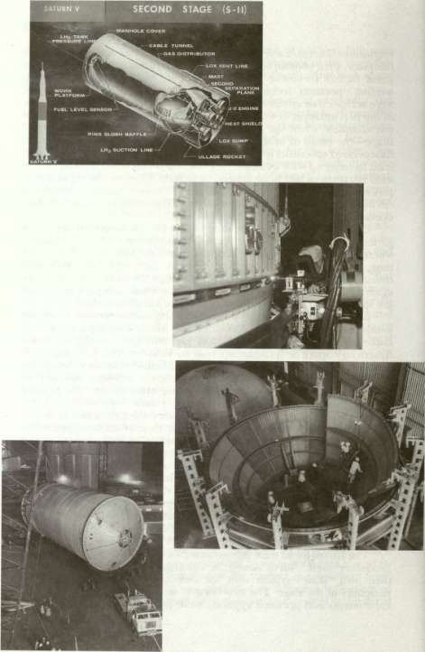
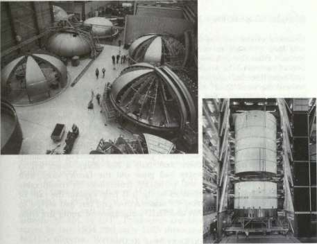
The S-II stage of the Saturn V is shown in the cutaway drawing at top left; at top right, gores are being applied to bulkheads at North American's Seal Beach facility; above, left, the automatic welding machine makes its slow circuit around the big second stage, carefully monitored by a technician. Above, right, one of the early S-II stages nears completion as the liquid hydrogen tank is lowered onto the liquid oxygen tank and their common bulkhead. Left, the final segment of an S-II stage thrust structure is lowered into place. Below, left, a completed S-II stage rolls out of the Seal Beach facility during the night shift. Below, right, an S-II stage is hoisted into the test stand at the Mississippi Test Facility.

STAGES TO SATURN
consisted of the welding tool remaining stationary while the bulkhead and tank cylinder turned on a large, motorized table. Advantages accrued from the enhanced stability of the trim and weld head, better overall control of the process, and ease of operation because bulky cables and miscellaneous equipment could be kept in one spot and not hauled around the work floor. New techniques for alignment, with adjustable screws spaced every few centimeters along alignment jigs, permitted nearly perfect match of the bulkhead and tank cylinder.
With manufacturing specifications of these magnitudes, North American experienced many long months of frustration until processes were completely under control. Not until January 1968 did the Space and Information Systems Division (S&ID) succeed in performing an error-free weld for the bulkhead-to-cylinder joint—accomplished in the buildup of S-II-9. By that time, there were only a half dozen stages left to produce. The previous stages had gone out the factory door with histories of shortcomings and corporate frustrations of considerable scope. The technical complexities of the S-II help explain the rash of problems encountered during its manufacture and test and served to highlight the trauma of NAA and S&ID's management under fire from NASA and from MSFC. 37
CRISIS AT SEAL BEACH
As the weight of the Apollo payloads relentlessly climbed during the early 1960s, NASA engineers redoubled efforts to lighten the stages. To get one more kilogram of payload, the laws of orbital mechanics required that 14 kilograms be cut from the S-IC; or four to five kilograms from the S-II; but only one from the S-IVB. The S-IVB stage was already in production when the weight problem became acute—it was too late to slice anything from that stage, where the advantage was greatest. Trying to scrape 14 kilograms out of the S-IC to save 1 kilogram of payload just was not feasible in terms of time and effort. That left the S-II. As the second stage became a more finely honed and thin-shelled vehicle, the balance between success or failure became more delicate. This was especially true when welding the large, thin tank skins of the S-II stage. 38
Manufacturing challenges such as reducing stage weight and the unusually long welding runs were not the only situations that escalated the S-II's troubles. Another persistent problem, for example, centered on the insulation for the LH 2 tank. MSFC technical monitors became increasingly concerned during the spring of 1964 and reported "considerable difficulty" in perfecting adequate LH 2 tank insulation; the growing problem crept up unawares, so to speak, and was reported with a note of surprise at MSFC. "The S-II stage insulation concept for vehicles 501, 502, 503 and to a somewhat lesser extent for S-II [ground-test vehicles] has not been fully qualified as of this date," read a memorandum dated 2
THE LOWER STAGES: S-IC AND S-II
June 1964. The memo candidly added, "This fact was discovered by Marshall personnel and came as quite a shock to S&ID management and needless to say, MSFC." The memo noted a number of anomalies, chief of which was the debonding of the nylon outer layer from the honeycomb material underneath when exposed to a simulated flight environment. The insulation difficulties became symptomatic. More serious production troubles appeared starting in October 1964, when burst tests revealed welded cylinder specimens lower in weld strength than anticipated. Then, on 28 October 1964, the first completed aft bulkhead for the S-II-S ruptured during a hydrostatic proof test, although at a lower pressure than specifications dictated. The fault was traced to a previous repair weld, done by hand, along a recirculation system service plate. While welding of a replacement bulkhead proceeded, a design change eliminated the welded service plate, making it an integral part of the bulkhead gore. 39
The continuing snags involving the S-II began to cause worry lines in the brows of managers at MSFC and Headquarters; in particular was the need to get the first S-II flight stage, S-II-1, out the door at Seal Beach, tested, and delivered to Cape Kennedy for the first Saturn V launch, AS-501, in 1967. Production troubles with the S-II ground-test stages by late 1964 and early 1965 threatened the S-II-1 so much that MSFC's director, Wernher von Braun, proposed a reworking of the whole S-II test program to make up some of the slippages. Major General Samuel C. Phillips, from his vantage point as Director of the Apollo Program in Washington, concurred and set in motion a series of shortcuts in the spring of 1965 to put the S-II schedule back in shape. Specifically, NASA decided to cancel the dynamic test stage (S-II-D) and, instead, use the S-II-S for this purpose after its structural tests. This decision greatly relieved both manufacturing and assembly pressures on flight stages at Seal Beach and permitted use of S-II-D hardware in follow-on stages. Further, the "all-systems" test stage bypassed its scheduled tests at Santa Susana and was scheduled for direct delivery to MTF. Meanwhile, the S-II-F facility checkout stage was scheduled to bypass MTF (where the all-systems stage would be used for facility activation purposes) for delivery direct to the Cape. There, the S-II-F would be pressed immediately into service to give Launch Complex 39 a thorough and complete checkout before the first flight stage arrived. In addition to relieving pressure on the schedule, these changes netted a savings of $17 million. 40
Following these early deviations, the S-II program appeared to be proceeding well until MSFC decided in May to freeze the configuration of the S-II. Explaining the decision, Arthur Rudolph, Saturn V Program Manager, said that because production hardware was in the process of fabrication, engineering change activities on vehicles and ground support equipment should be frozen to the "present baseline configuration."
STAGES TO SATURN
Henceforth, only "absolutely mandatory!' changes would be tolerated. 41 During the spring and summer, there was reason to be encouraged by the progress on the S-II: successful battleship tests at Santa Susanna Field Laboratory, and accelerating work on the electromechanical mockup (the progress in the latter case owed a great deal to the addition of a third work shift, with each shift putting in six days a week).
Welding continued to be troublesome. Early in July, the Space and Information Systems Division (S&ID) began preparations for making the first circumferential welds on the S-II-1 (destined to be the first flight-rated stage). After completing the operation on 19 July, the weld was found to be faulty and repairs stretched into the first week of August before additional work on the S-II-1 could be started. 42
Then the first incident in a chain of misfortunes occurred that created one of the most serious times of trouble in the development of the Saturn V. On 29 September 1965, the S-II-S/D (structures—dynamic-test stage) ruptured and fell apart during a loading test at Seal Beach. Destruction of the stage transpired during a test to simulate the forces acting on the stage at the end of the S-IC boost phase. MSFC quickly organized an ad hoc group to determine the reasons for the accident, tagging it with a rather dramatic title, the S-II-S/D Catastrophic Failure Evaluation Team. Additionally, Marshall added a Debris Evaluation Team to help pinpoint the component that caused the failure. While the Catastrophic Failure Evaluation Team started sifting reports, Colonel Sam Yarchin, the S-II Stage Manager, instructed the people at Seal Beach to untangle the twisted metal debris in the test tower and lay it out in orderly fashion inside a guarded enclosure for minute examination by the debris evaluation team. It was eventually determined that the point of failure had been in the aft skirt area at 144 percent of the limit load. Even though considerable data had been accumulated on this particular test and earlier tests, the loss of the stage left a void in the planned vehicle dynamic tests at Huntsville; the test program was juggled around to use the S-II-T stage instead, following static testing at MTF. 43
The loss of S-II-S and continuing difficulties with the S-II at Seal Beach caused increasing consternation at MSFC. When the president of North American, J. L. Atwood, visited von Braun in Huntsville on 14 October, he found an indignant mood prevailing at Marshall. Brigadier General Edmund F. L. O'Connor, Director of MSFC's Industrial Operations, provided von Braun with some background data that included the following judgment: "The S-II program is out of control. ... It is apparent that management of the project at both the program level and division level at S&ID has not been effective. ... In addition to the management problems, there are still significant technical difficulties in the S-II stage. . . ," 44 Obviously concerned, von Braun extracted promises from Atwood to put both a new man in charge of the S-II program and a
THE LOWER STAGES: S-IC AND S-II
senior executive in a special position to monitor the plethora of technical delays and manufacturing problems. 43
In an October letter to Harrison Storms, the president of S&ID, General O'Connor started with a friendly salutation ("Dear Stormy") and ended with assurances that MSFC wanted to help wherever possible to get the S-II program back on track. In between, the general minced no words. He pointed out that the breakdown in the S-II program reflected poorly on both S&ID and MSFC's management ability. O'Connor pointed a stern finger at S&ID, remarking that he was "most apprehensive" about the entire S-II program. "The continued inability or failure of S&ID to project with any reasonable accuracy their resource requirements, their inability to identify in a timely manner impending problems, and their inability to assess and relate resource requirements and problem areas to schedule impact, can lead me to only one conclusion," O'Connor declared, "that S&ID management does not have control of the Saturn S-II program." 43 The chief of Marshall's industrial operations also conveyed his worry about the troublesome stage to the upper echelons of NASA management. Reviewing the problems during the annual program review at Headquarters in November, O'Connor noted managerial and technical shortcomings at North American and said that MSFC had "caused changes to be made in management; some people have been moved." In spite of help from the R&D operations laboratories at MSFC, problems in welding, inspection, insulation, and component qualification still existed, and as a result, the first S-II flight stage was more than three months behind schedule. "It is my opinion that program management at North American is perhaps the principal shortcoming of the entire S-II program," O'Connor said. 47